СП 293.1325800.2017 «Системы фасадные теплоизоляционные композиционные с наружны»
О документе: разработчики, утверждение, регистрация, ключевые слова
СВОД ПРАВИЛ СП 293.1325800.2017
Правила проектирования и производства работ
Издание официальное
1 ИСПОЛНИТЕЛИ - Научно-исследовательский институт строительной физики Российской академии архитектуры и строительных наук (НИИСФ РААСН), НО «Ассоциация «Наружные фасадные системы» (НО «Ассоциация «АНФАС»)
2 ВНЕСЕН Техническим комитетом по стандартизации ТК 465 «Строительство»
3 ПОДГОТОВЛЕН к утверждению Департаментом градостроительной деятельности и архитектуры Министерства строительства и жилищнокоммунального хозяйства Российской Федерации (Минстрой России)
4 УТВЕРЖДЕН приказом Министерства строительства и жилищнокоммунального хозяйства Российской Федерации от 10 июля 2017 г. № 981/пр и введен в действие с 11 января 2018 г.
5 ЗАРЕГИСТРИРОВАН Федеральным агентством по техническому регулированию и метрологии (Росстандарт)
6 ВВЕДЕН ВПЕРВЫЕ
В случае пересмотра (замены) или отмены настоящего свода правил соответствующее уведомление будет опубликовано в установленном порядке. Соответствующая информация, уведомление и тексты размещаются также в информационной системе общего пользования - на официальном сайте разработчика (Минстрой России) в сети Интернет
© Минcтрой России, 2017
Настоящий нормативный документ не может быть полностью или частично воспроизведен, тиражирован и распространен в качестве официального издания на территории Российской Федерации без разрешения Минстроя России
Дата введения - 2018-01-11
УДК 693.6:006.354 ОКС 91.060.10
Ключевые слова: композиционная теплоизоляционная фасадная система, правила проектирования, производство работ, класс надежности, техническое решение, метод, характеристики, системные материалы и изделия, фасад, параметр, контроль, расчет
Руководитель организации-разработчика
Директор НИИСФ РААСН \_\_\_\_\_\_\_\_\_\_\_\_\_\_ И.Л. Шубин
Руководитель организации-соразработчика
Исполнительный директор
«Ассоциация «АНФАС» \_\_\_\_\_\_\_\_\_\_\_\_\_\_\_М.Г. Александрия
Введение
Настоящий свод правил разработан с учетом обязательных требований, установленных в федеральных законах от 27 декабря 2002 г. № 184-ФЗ «О техническом регулировании», от 30 декабря 2009 г. № 384-ФЗ «Технический регламент о безопасности зданий и сооружений».
Свод правил разработан авторским коллективом Ассоциации «АНФАС» ( М.Г. Александрия , С.А. Голунов , А.С. Монтянов ), НИУ МГСУ (канд. техн. наук С.А. Пашкевич ), АНО «НИЦ «Строительство» - ЦНИИСК им. В.А. Кучеренко ( А.В. Пестрицкий , канд. техн. наук А.А. Гусев ), НИИСФ РААСН (канд. техн. наук В.В. Козлов ).
1Область применения
Настоящий свод правил распространяется на системы фасадные теплоизоляционные композиционные с наружными штукатурными слоями (СФТК), применяемые при тепловой защите с наружной стороны ограждающих стеновых конструкций зданий и сооружений различного назначения и уровня ответственности с наружной стороны при новом строительстве, реконструкции и капитальном ремонте.
Настоящий свод правил устанавливает правила проектирования и производства работ по устройству и ремонту СФТК.
2Нормативные ссылки
В настоящем своде правил использованы нормативные ссылки на следующие документы:
ГОСТ 12.1.004-91 Система стандартов безопасности труда. Пожарная безопасность. Общие требования
\_\_\_\_\_\_\_\_\_\_\_\_\_\_\_\_\_\_\_\_\_\_\_\_\_\_\_\_\_\_\_\_\_\_\_\_\_\_\_\_\_\_\_\_\_\_\_\_\_\_\_\_\_\_\_\_\_\_\_\_\_\_\_\_\_\_\_\_
Издание официальное
КОМПОЗИЦИОННЫЕ С НАРУЖНЫМИ ШТУКАТУРНЫМИ СЛОЯМИ Правила проектирования и производства работ
Facade's thermo insulation composite systems with external mortar layers. Design and work execution rules
ГОСТ 12.4.026-2015 Система стандартов безопасности труда. Цвета сигнальные, знаки безопасности и разметка сигнальная. Назначение и правила применения. Общие технические требования и характеристики. Методы испытаний
ГОСТ 7076-99 Материалы и изделия строительные. Метод определения теплопроводности и термического сопротивления при стационарном тепловом режиме
ГОСТ 7502-98 Рулетки измерительные металлические. Технические условия
ГОСТ 7948-80 Отвесы стальные строительные. Технические условия ГОСТ 10528-90 Нивелиры. Общие технические условия
ГОСТ 15588-2014 Плиты пенополистирольные теплоизоляционные. Технические условия
ГОСТ 16350-80 Климат СССР. Районирование и статистические параметры климатических факторов для технических целей
ГОСТ 24258-88 Средства подмащивания. Общие технические условия
ГОСТ 25782-90 Правила, терки и полутерки. Технические условия
ГОСТ 25898-2012 Материалы и изделия строительные. Методы определения паропроницаемости и сопротивления паропроницанию
ГОСТ 26629-85 Здания и сооружения. Метод тепловизионного контроля качества теплоизоляции ограждающих конструкций
ГОСТ 27321-87 Леса стоечные приставные для строительно-монтажных работ. Технические условия
ГОСТ 28196-89 Краски водно-дисперсионные. Технические условия
ГОСТ 28498-90 Термометры жидкостные стеклянные. Общие технические требования. Методы испытаний
ГОСТ 29231-91 Шнуры. Технические условия
ГОСТ 31251-2008 Стены наружные с внешней стороны. Метод испытаний на пожарную опасность
ГОСТ 32310-2012 (EN 13164:2008) Изделия из экструзионного пенополистирола XPS теплоизоляционные промышленного производства, применяемые в строительстве. Технические условия
ГОСТ 32314-2012 (EN 13162:2008) Изделия из минеральной ваты теплоизоляционные промышленного производства, применяемые в строительстве. Общие технические условия
ГОСТ 33739-2016 Системы фасадные теплоизоляционные композиционные с наружными штукатурными слоями. Классификация
ГОСТ 33740-2016 Системы фасадные теплоизоляционные композиционные с наружными штукатурными слоями. Термины и определения
ГОСТ Р 54358-2011 Составы декоративные штукатурные на цементном вяжущем для фасадных теплоизоляционных композиционных систем с наружными штукатурными слоями. Технические условия
ГОСТ Р 54359-2011 Составы клеевые, базовые штукатурные, выравнивающие шпаклевочные на цементном вяжущем для фасадных теплоизоляционных композиционных систем с наружными штукатурными слоями. Технические условия
ГОСТ Р 55225-2012 Сетки из стекловолокна фасадные армирующие щелочестойкие. Технические условия
ГОСТ Р 55412-2013 Системы фасадные теплоизоляционные композиционные с наружными штукатурными слоями. Методы испытаний
ГОСТ Р 55818-2013 Составы декоративные штукатурные на полимерной основе для фасадных теплоизоляционных композиционных систем с наружными штукатурными слоями. Технические условия
ГОСТ Р 55936-2014 Составы клеевые, базовые штукатурные и выравнивающие шпаклевочные на полимерной основе для фасадных теплоизоляционных композиционных систем с наружными штукатурными слоями. Технические условия
ГОСТ Р 56387-2015 Смеси сухие строительные на цементном вяжущем. Технические условия
ГОСТ Р 56623-2015 Контроль неразрушающий. Метод определения сопротивления теплопередаче ограждающих конструкций
ГОСТ Р 56707-2015 Системы фасадные теплоизоляционные композиционные с наружными штукатурными слоями. Общие технические условия
ГОСТ Р 57270-2016 Материалы строительные. Методы испытаний на горючесть
СП 17.13330.2017 «СНиП II-26-76 Кровли»
СП 20.13330.2016 «СНиП 2.01.07-85* Нагрузки и воздействия»
СП 48.13330.2011 «СНиП 12-01-2004 Организация строительства» (с изменением № 1)
СП 50.13330.2012 «СНиП 23-02-2003 Тепловая защита зданий»
СП 70.13330.2012 «СНиП 3.03.01-87 Несущие и ограждающие конструкции» ( с изменением № 1)
СП 71.13330.2017 «СНиП 3.04.01-87 Изоляционные и отделочные покрытия»
СП 131.13330.2012 «СНиП 23-01-99* Строительная климатология» (с изменением № 2)
СП 230.1325800.2015 Конструкции ограждающие зданий. Характеристики теплоизоляционных неоднородностей
Примечание - При пользовании настоящим сводом правил целесообразно проверить действие ссылочных документов в информационной системе общего пользования - на официальном сайте федерального органа исполнительной власти в сфере стандартизации в сети Интернет или по ежегодному информационному указателю «Национальные стандарты», который опубликован по состоянию на 1 января текущего года, и по выпускам ежемесячного информационного указателя «Национальные стандарты» за текущий год. Если заменен ссылочный документ, на который дана недатированная ссылка, то рекомендуется использовать действующую версию этого документа с учетом всех внесенных в данную версию изменений. Если заменен ссылочный документ, на который дана датированная ссылка, то рекомендуется использовать версию этого документа с указанным выше годом утверждения (принятия). Если после утверждения настоящего свода правил в ссылочный документ, на который дана датированная ссылка, внесено изменение, затрагивающее положение на которое дана ссылка, то это положение рекомендуется применять без учета данного изменения. Если ссылочный документ отменен без замены, то положение, в котором дана ссылка на него, рекомендуется применять в части, не затрагивающей эту ссылку. Сведения о действии сводов правил целесообразно проверить в Федеральном информационном фонде стандартов.
3Термины и определения
В настоящем своде правил применены термины по ГОСТ 33740, ГОСТ Р 56707.
4Общие положения
- принимать конструктивные решения, обеспечивающие надежность и долговечность;
- применять СФТК, соответствующие требованиям ГОСТ Р 56707;
- соблюдать техническую документацию системодержателя.
5Требования к СФТК
- климатический район - любой по ГОСТ 16350, при расчетной зимней температуре наружного воздуха, принимаемой по СП 131.13330, не ниже минус 50 °С (принимается как средняя температура воздуха наиболее холодной пятидневки с обеспеченностью 0,92);
- зоны влажности - сухая, нормальная, влажная по СП 50.13330;
- район по давлению ветра - I -VI по СП 20.13330;
- категория сложности инженерно-геологических условий - I-III по [8].
Примечания
1 Допускается применение фасадного экструзионного пенополистирола XPS по ГОСТ 32310, предназначенного для СФТК, устанавливаемого на здания пониженного уровня ответственности [1, статья 4, часть 10], а также на малоэтажные жилые дома при высоте здания не более трех этажей.
2 Допускается применение фасадного экструзионного пенополистирола XPS по ГОСТ 32310, предназначенного для СФТК, устанавливаемых на цоколях зданий нормального и повышенного уровней ответственности [1, статья 4, части 8, 9].
6Требования к системным материалам и изделиям в составе СФТК
- для минераловатных изделий, применяемых в составе теплоизоляционного слоя, - по ГОСТ 32314;
- для изделий из пенополистирола, применяемых в комбинированном теплоизоляционном слое, - по ГОСТ 15588;
- для изделий из экструзионного пенополистирола XPS, применяемых в комбинированном теплоизоляционном слое и при устройстве утепления цоколей зданий, - по ГОСТ 32310;
- для клеевых, базовых штукатурных и выравнивающих шпаклевочных составов на цементном вяжущем - по ГОСТ Р 54359;
- для декоративных штукатурных составов на цементном вяжущем - по ГОСТ Р 54358;
- для клеевых, базовых штукатурных и выравнивающих шпаклевочных составов на полимерной основе - по ГОСТ Р 55936;
- для декоративных штукатурных составов на полимерной основе - по ГОСТ Р 55818;
- для фасадных стеклосеток - по ГОСТ Р 55225;
- для окрасочных составов - по ГОСТ 28196.
7Правила проектирования СФТК
Примечание - Типовые технические решения по проектированию СФТК приведены в приложении А.
Примечания
1 Не допускается (за исключением индивидуальных жилых зданий высотой не более трех этажей и общей площадью менее 500 м² ) применение СФТК c комбинированным теплоизоляционным слоем, не прошедших огневые испытания по ГОСТ 31251 на определение их класса пожарной опасности и не имеющих соответствующего протокола огневых испытаний или экспертного пожарно-технического заключения, подготовленного на основе результатов ранее проведенных огневых испытаний конкретного СФТК.
Экспертные пожарно-технические заключения должны быть выполнены организацией, проводившей огневые испытания данной конкретной СФТК.
2 В СФТК применяют материалы, указанные в документации системодержателя, а толщина теплоизоляционного, армированного базового и декоративно-защитного финишного слоев в составе СФТК с комбинированным теплоизоляционным слоем не должна превышать значений, приведенных в соответствующих протоколах огневых испытаний по ГОСТ 31251 или экспертных пожарно-технических заключениях по пункту 4.4 ГОСТ 31251-2008.
Толщина окрасочного слоя не должна превышать 0,5 мм.
- класс прочности на сжатие основания из тяжелого и силикатного бетона не ниже В15;
- класс прочности на сжатие основания из ячеистого, поризованного бетонов и бетона на пористых заполнителях - не ниже В2,5;
- марка по прочности на сжатие основания из клинкерного кирпича - не ниже М300;
- марка по прочности на сжатие основания из керамического кирпича, камней и кирпича с горизонтальными пустотами - не ниже М35.
- минеральную вату, соответствующая требованиям таблицы ГОСТ Р 56707-2015. Заводская упаковка минеральной ваты должна содержать данные о следующих характеристиках: прочность на сжатие при 10 %-ной линейной деформации и прочность при растяжении перпендикулярно лицевым поверхностям;
- фасадный пенополистирол по ГОСТ 15588.
Примечание - Применение для противопожарных рассечек и окантовок МВП на основе стеклянных волокон до получения положительных результатов испытаний по ГОСТ 31251 в составе СФТК не допускается.
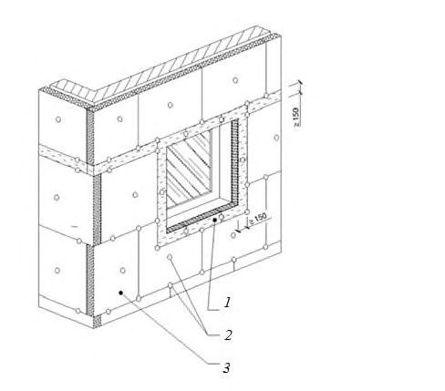
1 - противопожарная рассечка (МВП); 2 - дюбель (расположение показано условно); 3 - плита утеплителя (ППС)
Примечание - ППС - пенополистирольная плита
Рисунок 7.1 - Схема расположения противопожарных рассечек и окантовок проема
СП 293.1325800.2017
Примечание При выполнении СФТК непосредственно от уровня отмостки здания допускается устанавливать концевую рассечку не вплотную к отмостке, а приподняв ее нижнюю горизонтальную грань на высоту не более 0,6 м. В этом случае в качестве теплоизоляционного слоя СФТК на высоту от планировочной отметки уровня земли до нижнего торца такой условно концевой рассечки допускается применять ППС с суммарной толщиной не более 200 мм или плиты из экструдированного пенополистирола с фактической средней плотностью не более 33 кг/м³ и суммарной толщиной не более 150 мм.
7.10.3.1 Допускается, за исключением первого этажа здания, выполнять поэтажные рассечки не на всю ширину СФТК на этой стене, а дискретными. При дискретной схеме поэтажные рассечки устанавливают в виде непрерывной полосы на всю длину верхних обрезов оконных (витражных, дверных и др.) проемов этажа, в том числе внешних (открытых и остекленных) проемов лоджий, переходов и им подобных, с горизонтальными выпусками в обе боковые стороны от проемов согласно 7.10.3.27.10.3.5, с длиной выпусков в зависимости от типа и ширины расположенных по боковым сторонам от проема простенков (рисунок 7.2).
7.10.3.2 При ширине более 1,5 м простенка между смежными проемами этажа, между проемом этажа и смежной с ним вершиной внешнего (исходящего) вертикального угла здания длина горизонтального выпуска поэтажной рассечки от проема в сторону такого простенка должна составлять не менее 0,75 м. При ширине такого простенка менее 1,5 м горизонтальный выпуск поэтажной рассечки выполняют на всю ширину простенка.
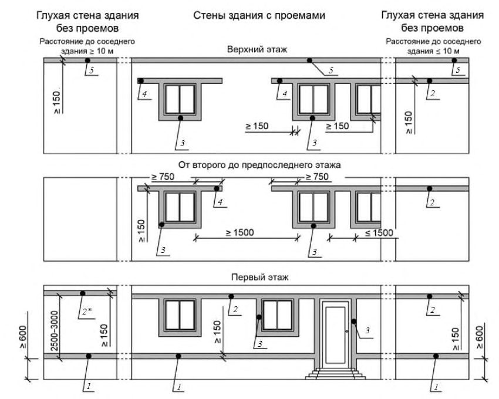
Места расположения противопожарных рассечек: 1 - в районе цоколя здания; 2 - над оконным проемом по всему периметру здания; 2* - на высоте 2,5-3 м и от нижней отметки систему по всему периметру глухого торца здания; 3 - вокруг оконных и дверных проемов; 4 - вынос рассечки в сторону от оконного проема; 5 - по периметру примыкания к кровле
Рисунок 7.2 - Поэтажная схема расположения противопожарных рассечек и окантовок
СП 293.1325800.2017
7.10.3.3 При ширине более 2,4 м простенка (участка) между оконным (дверным, витражным и др.) проемом этажа и расположенной сбоку от него вершиной внутреннего вертикального угла здания с шириной раскрытия 135 о и менее (включая внутренние углы, образуемые наружными стенами и внешней стороной ограждения лоджий, балконов и т. п.) длина горизонтального выпуска поэтажной рассечки от проема в сторону вершины этого угла должна составлять не менее 0,75 м. При этом непосредственно от вершины внутреннего угла в сторону такого проема в этом же высотном уровне должна быть одновременно установлена рассечка длиной не менее 1,5 м.
7.10.3.4 При ширине 1,5-2,4 м простенка между оконным (дверным, витражным и др.) проемом и расположенной сбоку от него вершиной внутреннего вертикального угла здания с шириной раскрытия 135 о и менее (включая внутренние углы, образуемые наружными стенами и внешней стороной ограждения лоджий/балконов и т. п.) следует выполнять горизонтальный выпуск поэтажной рассечки на все расстояние от проема до вершины угла.
Примечание При ширине менее 1,5 м простенка между оконным (дверным, витражным и др.) проемом и расположенной сбоку от него вершиной внутреннего вертикального угла здания с шириной раскрытия 135 о и менее (включая внутренние углы, образуемые наружными стенами и внешней стороной ограждения лоджий, балконов и т. п.) роль рассечки на этом участке выполняют МВП теплоизоляционного слоя СФТК (см. 7.12).
7.10.3.5 За исключением располагаемых на всю ширину СФТК в уровнях от +2,5 до +3 м и от +5 до +6 м от нижней отметки применения СФТК на глухой (без проемов) наружной стене здания остальные промежуточные рассечки по высоте этой стены допускается не устанавливать при условии, что расстояние от стены до ближайшего здания (сооружения) составляет не менее 16 м. В противном случае поэтажные рассечки следует устанавливать на каждом этаже здания, а при расстоянии до ближайшего здания менее 8 м - выполнять теплоизоляционный слой из негорючих (группа НГ) МВП. Поэтажные рассечки в общем случае следует устанавливать на всю ширину глухой стены. Установка на глухих стенах в СФТК концевых рассечек обязательна (см. рисунок 7.2).
Примечание - Противопожарные рассечку и окантовку допускается выполнять по толщине из нескольких слоев. В этом случае МВП в смежных слоях противопожарных рассечки и окантовки должны плотно, без зазоров в свету, примыкать друг к другу. Стыки друг с другом МВП в смежных по толщине слоях противопожарных рассечки и окантовки следует выполнять со смещением.
Примечание В пределах площади участков СФТК, на которых теплоизоляционный слой выполняется из МВП, функцию противопожарных рассечек всех типов и окантовок выполняют указанные выше МВП.
Примечание - При совпадении месторасположения вертикальной рассечки с любым из участков, где подлежат выполнению требования любого пункта из 7.13-7.15, установка вертикальной рассечки не требуется.
Рисунок 7.3 - Схемы примыкания СФТК к пожарной наружной лестнице здания
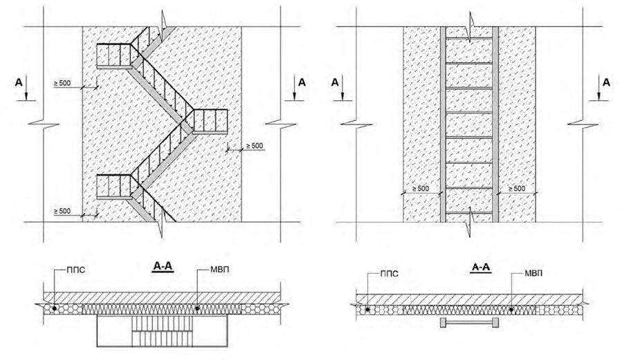
- начиная от вершины угла в направлении указанного проема - на расстоянии * не менее 1,5 м по горизонтали и вдоль всей высоты СФТК, начиная от нижней отметки применения СФТК и на высоту не менее 6 м, считая от верхнего откоса самого верхнего оконного (либо иного) проема;
- начиная от вершины этого же угла в противоположную боковую сторону - на расстоянии * не менее 1,0 м по горизонтали и вдоль всей высоты СФТК, начиная от нижней отметки применения СФТК и на высоту не менее 6 м, считая от верхнего откоса самого верхнего оконного (либо иного) проема.
* Расстояние указано от плоскости лицевой поверхности СФТК.
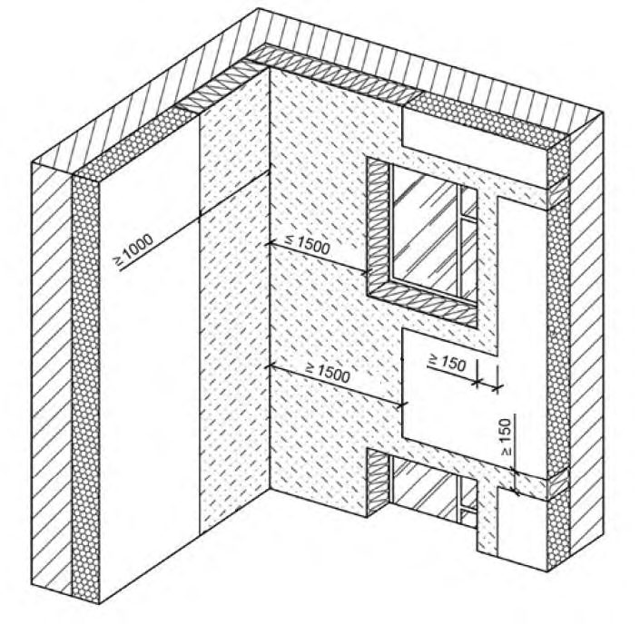
Примечание ̶ Штриховкой отмечены фрагменты теплоизоляции из негорючих (группа НГ) МВП.
Рисунок 7.4 - Схема расположения противопожарных рассечек и окантовок внутреннего угла при наличии близко расположенного проема
1 - противопожарная рассечка (МВП); 2 - плита утеплителя (МВП); 3 - плита утеплителя (ППС)
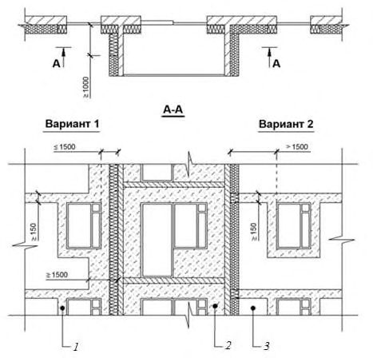
Рисунок 7.5 - Схема расположения противопожарных рассечек и окантовок на участках наружных стен в зоне остекленных лоджий
Примечания
1 Допускается использовать в качестве теплоизоляционного слоя СФТК на этих участках, за исключением верхней плоскости парапета, ППС, в том случае, если примыкающая снизу к парапету кровля выполнена как эксплуатируемая, с учетом требований пункта 5.3.3 СП 17.13330.2017, по всему контуру сопряжения с парапетом на расстоянии не менее 2 м от границы сопряжения. При этом необходимость выполнения в СФТК на внутренней стороне парапета со стороны кровли верхней и нижней концевых рассечек сохраняется.
2 Допускается выполнять теплоизоляцию снизу выступов перекрытий с применением в СФТК ППС только в том случае, если расстояние от нижней плоскости этих выступов до верхнего обреза нижерасположенного оконного (дверного и др.) проема превышает 3,5 м, а до планировочной отметки уровня земли (до уровня проезда машин) составляет не менее 6 м. Это допущение не распространяется на потолочные поверхности конструкций.
3 Не допускается выполнение из ППС теплоизоляционного слоя сквозных проездов и проходов (арки) и въездов-выездов во встроенно-пристроенные стоянки автомобилей.
Рисунок 7.6 - Усиление СФТК в зоне оконных проемов дополнительными элементами из фасадной стеклосетки
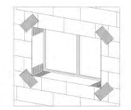
Примечание - Ширина деформационного шва СФТК, выполняемого на протяженных участках стен, должна составлять не менее 6 мм. При выполнении деформационного шва здания ширина шва в штукатурном слое должна соответствовать проектному значению.
Примечание -Следует использовать элементы усиления, предусмотренные технической документацией системодержателя.
1 - наружная стена * ; 2 - деформационный шов стены; 3 - СФТК; 4 -теплоизоляция; 5 - декоративная заглушка ; 6 - деформационный профиль Рисунок 7.7 - Установка деформационного профиля
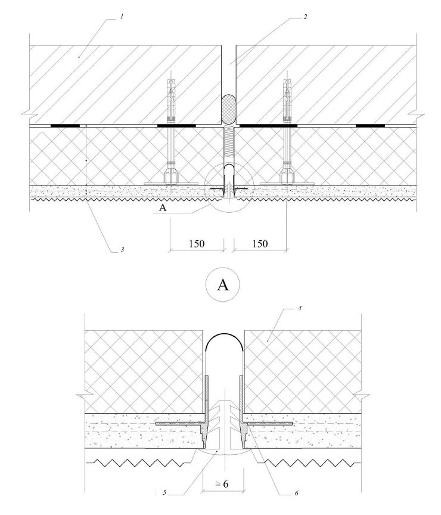
* Согласно проекту
Рекомендовано.
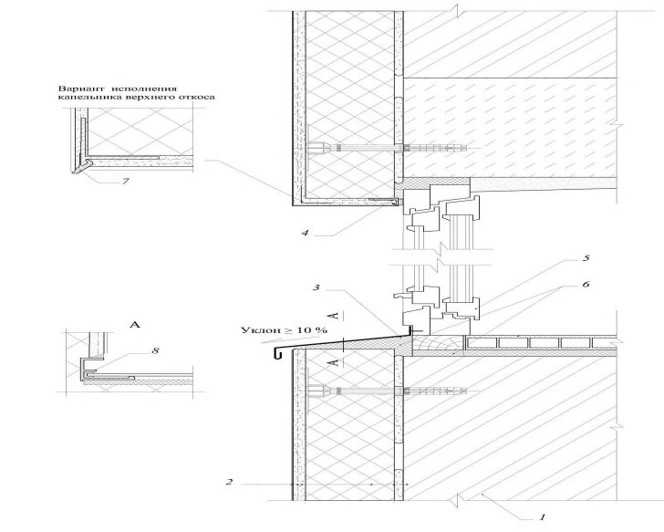
1 - наружная стена * ; 2 - слои СФТК ** ; 3 - отлив; 4 - примыкающий профиль с уплотнительной лентой; 5 - оконный блок; 6 - монтажная полиуретановая пена; 7 - профиль с капельником; 8 - торцевая заглушка отлива; δут - толщина теплоизоляционного слоя
Рисунок 7.8 - Устройство примыкания СФТК к оконному блоку
* Согласно проекту.
** Слева направо: стена здания, клеевой слой, теплоизоляционный слой, армированный базовый штукатурный слой, декоративно-защитный финишный слой.
СП 293.1325800.2017
Примечание - Допускается определять общее сопротивление паропроницанию штукатурных слоев в соответствии с ГОСТ 25898.
В анкерах с тарельчатым дюбелем следует использовать нижеперечисленные типы распорных элементов:
- стальной распорный элемент (забивного или завинчивающегося типа) с защитным антикоррозионным покрытием, имеющим пластиковую термоголовку (если конструкцией тарельчатого дюбеля не предусмотрена изолирующая заглушка);
- стальной распорный элемент (забивного или завинчивающегося типа) с защитным антикоррозионным покрытием, если конструкцией тарельчатого дюбеля предусмотрена изолирующая заглушка, выполняющая функцию терморазрыва;
- композиционный распорный элемент на основе синтетических смол, наполненных искусственными или природными волокнами.
Таблица 7.1 Технические требования к анкерам с тарельчатым дюбелем
| Техническое требование | Класс надежности СФТК по применению | Класс надежности СФТК по применению | Класс надежности СФТК по применению |
|---|---|---|---|
| СК0 | СК1 | СК2 | |
| Геометрические размеры, в т. ч.: - диаметр пластиковой части анкера, мм, не менее | 8 | ||
| - диаметр тарельчатого элемента, мм, не менее | 60 | 60 | 60 |
| - диаметр распорного элемента, мм, не менее | 4,1 | 4,1 | 4,1 |
| Высота изоляции термоголовки над стальным распорным элементом, мм, не менее | 24 | 11 | 5 |
| Толщина защитного антикоррозионного покрытия стального распорного элемента, мкм, не менее | 5 | ||
| Прочность материала пластикового дюбеля на разрыв, МПа, не менее | 1,5 | 1,5 | 1,0 |
| Удельная потеря теплоты, Вт/°С, не более | Определяется на основании расчета по СП 50.13330.2012 (приложение Е) | Определяется на основании расчета по СП 50.13330.2012 (приложение Е) | Определяется на основании расчета по СП 50.13330.2012 (приложение Е) |
| Содержание вторичного сырья пластиковом дюбеле | Не допускается |
Примечания
1 Приведенные в настоящей таблице характеристики должны быть подтверждены соответствующими протоколами испытаний, входящими в состав технической документации системодержателя.
2 При диаметре распорного элемента менее 4,1 мм допустимость применения изделия должна быть подтверждена соответствующими протоколами испытаний.
3 При производстве изделия допускается использовать только новое сырье. При изготовлении может быть добавлен только тот же переработанный материал из применяемых марок полимера (например, литник), полученный в процессе изготовления данного изделия.
A применение в тяжелом бетоне марки B20 и выше, плотностью не менее 1800 кг/м³;
B применение в основаниях из полнотелых штучных материалов марки по прочности М100 и выше;
C применение в основаниях из пустотелых или перфорированных штучных материалов марки по прочности М100 и выше;
D применение в бетоне с легким заполнителем марки по прочности B7,5 и выше, плотностью не менее 1200 кг/м³;
E применение в ячеистом бетоне автоклавного твердения марки B2,5 и выше, плотностью не менее 400 кг/м³.
Примечание - Область применения анкера с тарельчатым дюбелем должна быть указана в технической документации на изделие. Допускаются комбинации разных категорий применения.
Полученное в результате значение расчетного вытягивающего усилия F р должно быть больше, чем минимальный показатель, приведенный в таблице 7.2.
Таблица 7.2 Минимальные значения вытягивающего усилия анкеров с тарельчатым дюбелем
| Категория применения тарельчатого анкера | Расчетное вытягивающее усилие F рч , кН, не менее, в зависимости от класса надежности СФТК по применению | Расчетное вытягивающее усилие F рч , кН, не менее, в зависимости от класса надежности СФТК по применению | Расчетное вытягивающее усилие F рч , кН, не менее, в зависимости от класса надежности СФТК по применению |
|---|---|---|---|
| Категория применения тарельчатого анкера | СК0 | СК1 | СК2 |
| А | 0,35 | 0,30 | 0,20 |
| B | 0,35 | 0,30 | 0,20 |
| C | 0,25 | 0,20 | 0,15 |
| D | 0,25 | 0,20 | 0,15 |
| E | 0,25 | 0,15 | 0,15 |
Пример раскладки теплоизоляционных плит размерами 1000×600
Пример раскладки теплоизоляционных плит размерами 1000×200
Пример фрагмента теплоизоляции стен выше отм. + 40,0 от уровня отмостки здания
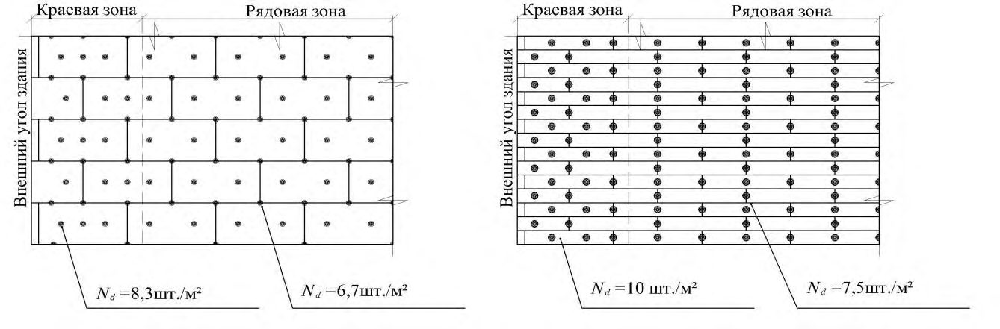
Пример фрагмента теплоизоляции стен до отм. + 40,0 от уровня отмостки здания
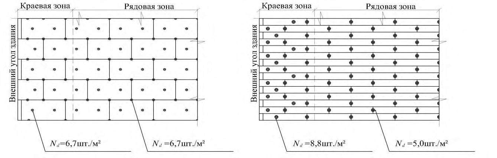
Пример фрагмента теплоизоляции стен до отм. +16,0 от уровня отмостки здания
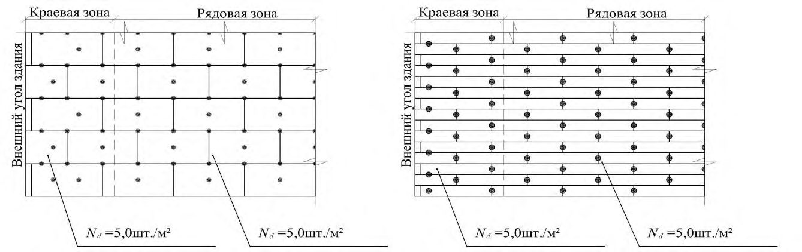
Nd - фактическое количество анкеров с тарельчатым дюбелем на 1 м² теплоизоляционного слоя из условий принятой схемы. Nd = Np /Sp , где Np число анкеров с тарельчатым дюбелем в проекции теплоизоляционной плиты по плоскости, шт.; Sp -площадь поверхности теплоизоляционной плиты, м²
Рисунок 7.9 - Примеры схем установки тарельчатых анкеров в составе СФТК
8Правила устройства СФТК и приемки выполненных работ
8.1Общие положения
Примечание - Карта контроля за выполнением работ приведена в приложении Г.
- обеспечение заказчиком/генподрядчиком производителя работ утвержденной проектной документацией;
- обеспечение заказчиком/генподрядчиком производителя работ технической, технологической документацией по устройству СФТК, привязанной к конкретному объекту производства работ и утвержденной системодержателем;
- разработку производителем работ ППР на СФТК;
- оформление производителем работ разрешений и допусков на производство работ, назначение лиц, ответственных за контроль качества производства работ, и лиц, ответственных за соблюдение требований безопасности при их производстве;
- обучение, при необходимости, персонала исполнителя работ методам и правилам работ по устройству СФТК по программам, согласованным с системодержателем, и оформление допусков на производство работ;
- обеспечение объекта строительства подъездными путями, электро- и водоснабжением, системой связи, помещениями бытового обслуживания, складом для приобъектного хранения строительных материалов;
- организацию поставки на объект строительства оборудования, конструкций, материалов и готовых изделий и их складирования;
- подготовку производителем работ ППР на установку строительных лесов (при их использовании) и иных средств подмащивания.
- монтаж кровельного покрытия;
- монтаж оконных и дверных блоков
- устройство козырьков и покрытий над входами, балконами и т. п.;
- внутренние отделочные работы с использованием строительных растворов.
8.1.5.1 При приемке-передаче фасада под отделку его состояние оценивается уполномоченными представителями заказчика/генподрядчика и производителя работ (таблица 8.1). Выявленные недостатки фиксируют и устраняют.
Таблица 8.1 Требования к оценке состояния фасада при его приемкепередаче под отделку
| Этап выполнения фасадных работ | Технические требования | Метод оценки, вид регистрации |
|---|---|---|
| Подготовка поверхности основания (очистка, грунтование, выравнивание поверхностей) | Контроль выполнения основания на соответствие требованиям СП 70.13330. Контроль работ в соответствии с перечнем недостатков, выявленных в процессе приемки- передачи фасадов под установку СФТК | Акт приемки-передачи фасада под отделку (форма акта приведена в приложении Д). Акт освидетельствования скрытых работ на подготовку основания (форма акта приведена в приложении Е) |
8.1.5.2 Основание для устройства СФТК должно быть:
- очищено от остатков строительного раствора, загрязнений (пыли, мела и т. д.), цементных и известковых налетов;
- очищено от ржавчины с обязательной обработкой антикоррозионной грунтовкой металлических деталей, закрываемых теплоизоляционным слоем;
- при необходимости очищено от грибков, лишайников, мхов, плесени (с обработкой пораженных участков противогрибковыми и бактерицидными составами);
- обработано укрепляющим грунтом (если это предусмотрено проектной документацией и (или) технической документацией системодержателя).
8.1.5.3 С основания должны быть удалены все осыпающиеся и непрочные участки, а дефекты поверхности основания глубиной более 10 мм - заполнены ремонтными штукатурными составами.
8.1.5.4 Основание перед монтажом СФТК также должно быть проверено на наличие отклонений от плоскости. Неровности, превышающие допустимые значения (таблица 8.2), подлежат выравниванию строительным раствором (впадины) либо удалению механическим способом (выступы). При значительных отклонениях от плоскости (более 20 мм) на значительных площадях фасада (более 10 м² ) работы по выравниванию фасада проводят как отдельный вид работ, по окончании которого состояние основания повторно оценивается уполномоченными представителями заказчика/генподрядчика и производителя работ. Составляют акт приемки-передачи фасадов под установку СФТК.
8.1.5.5 На каждом объекте производства работ по установке СФТК следует осуществлять проверку несущей способности основания на соответствие значениям, принятым в проекте. Проверка основания по несущей способности на вырыв анкера осуществляется профильной организацией в соответствии с требованиями настоящего свода правил, действующих нормативных документов и технической документации.
Для проведения натурных испытаний привлекают организацию, аккредитованную в порядке, предусмотренном действующим законодательством Российской Федерации. По результатам проведения натурных испытаний системодержателю или иному лицу, ответственному за производство работ по установке СФТК, выдают протокол испытаний с заключением о правильности выбора типа и числа анкеров с тарельчатым дюбелем, достаточности его физико-механических свойств для применения для имеющегося основания, глубины его анкеровки и др.
Примечание -Допускается выполнение работ в условиях пониженной и отрицательной температуры атмосферного воздуха (до минус 10 °С) при условии соблюдения дополнительных мер по обеспечению требуемого температурного-влажностного режима на участке производства работ по 8.3.
Примечание - В случае невозможности установки строительных лесов допускается проводить монтаж СФТК с навесных строительных люлек и строительных подъемников. При этом ППР на устройство СФТК в обязательном порядке согласовывают с заказчиком/генеральным подрядчиком, уполномоченными органами строительного надзора и системодержателем.
Рисунок 8.1 - Схема установочных параметров строительных лесов
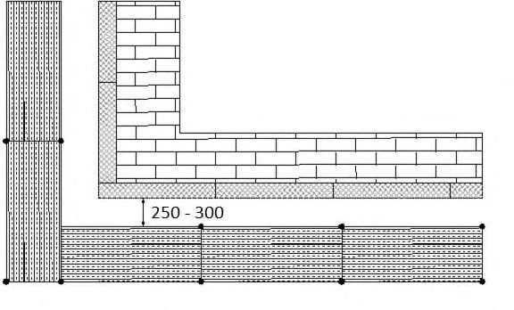
8.2Правила производства работ по устройству СФТК
8.2.1 Устройство СФТК осуществляют в такой последовательности:
- монтаж теплоизоляционного слоя, включая монтаж цокольного (стартового) профиля (если иное не предусмотрено ППР) и установка анкеров с тарельчатым дюбелем;
- устройство базового штукатурного слоя, армированного фасадной стеклосеткой, включая установку усиливающих элементов и профилей;
- устройство декоративно-защитного финишного слоя с последующей его окраской или без нее, включая устройство выравнивающего слоя и его грунтование (если иное не предусмотрено ППР).
После устройства декоративно-защитного финишного слоя проводят установку оконных отливов, герметизацию швов и примыканий, а также заделку мест крепления строительных лесов.
Примечание - Устройство (монтаж) декоративных архитектурных элементов, предусмотренных проектной документацией для установки на фасадах объекта производства работ (за исключением случаев, когда декоративные элементы формируются за счет изменения толщины теплоизоляционного слоя), а также установка на фасадах объекта производства работ дополнительного оборудования (кондиционеры, приборы освещения и т. п.), предусмотренная проектной документацией, не относятся к работам по устройству СФТК.
- установка цокольного (стартового) профиля (в случае, если это предусмотрено проектной документацией);
- приклеивание (установка) теплоизоляционных плит к строительному основанию;
- механическая фиксация приклеенных теплоизоляционных плит с помощью анкеров с тарельчатым дюбелем.
8.2.3.1 Монтаж цокольного профиля (рисунок 8.2) выполняется с плотным примыканием к строительному основанию в точках крепления посредством установки соответствующих по толщине пластмассовых дистанционных прокладок. Зазор между основанием и цокольным профилем заполняют монтажной полиуретановой пеной. Цокольные профили устраивают встык с применением пластмассового соединительного элемента. Не допускается соединение цокольных профилей внахлест. На углах здания цокольный профиль формируется с помощью двух косых надрезов и последующего сгиба.
1 - основание; 2 - соединительный элемент цокольного профиля; 3 - опорный цокольный профиль; 4 - анкер с дюбелем; 5 - дистанционная прокладка
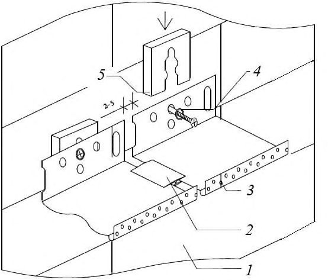
Рисунок 8.2 - Установка цокольного профиля
8.2.3.2 Приклеивание теплоизоляционных плит к строительному основанию осуществляют с помощью клеевых составов. Клеевые составы приготовляют в соответствии с технической документацией системодержателя. Нанесение клеевого состава на теплоизоляционные плиты проводят с помощью кельмы полосой шириной от 50 до 80 мм и толщиной от 10 до 30 мм по всему периметру с отступлением от краев от 20 до 30 мм и дополнительным нанесением от трех до шести пятен клеевого состава на центральную часть плоскости плиты. Допускается также механизированное нанесение клеевого состава.
Примечание - Полоса клеевого состава, наносимого по контуру плиты, должна иметь разрывы для исключения образования воздушных пробок.
Таблица 8.2 Контролируемые параметры при устройстве СФТК
| Этап выполнения фасадных работ | Технические требования | Метод оценки, вид регистрации |
|---|---|---|
| Установка цокольного (стартового) профиля (если его применение предусмотрено проектной документацией) | Зазоры между основанием и профилем: - не более 1 мм/м | Измерительный, на каждые 50-100 м² поверхности покрытия |
| Приклеивание теплоизоляционных плит с последующим механическим креплением анкерами с тарельчатым дюбелем | Ширина швов между плитами - не более 2 мм. Отклонения плоскости изоляции: - по горизонтали ± 2 мм/2 м; - по вертикали ± 2 мм/2 м. Размер уступов между плитами не должен превышать 1,5 мм. Контроль количества и типа установленных анкеров с тарельчатым дюбелем, а также их целостности, местоположения и отсутствия подвижности анкера. Тарельчатый диск анкера, термоголовка распорного элемента или заглушка не должны выступать из плоскости теплоизоляционного слоя. Выступающие элементы анкера должны быть размещены заподлицо в плоскости теплоизоляции либо утоплены относительно плоскости не более 2 мм | Акт освидетельствования скрытых работ на устройство и крепление теплоизоляционного слоя (форма акта приведена в приложении Е) |
Окончание таблицы 8.2
| Этап выполнения фасадных работ | Технические требования | Метод оценки, вид регистрации |
|---|---|---|
| Нанесение базового штукатурного слоя, армированного фасадной стеклосеткой (армирование угловых зон и примыканий, армирование плоскости) | Контроль качества штукатурного слоя на соответствие требованиям СП 71.13330 Контроль толщины армированного базового слоя: - не менее 3 мм | Измерительный, на каждые 50-100 м² поверхности покрытия. Акт освидетельствования скрытых работ (форма акта приведена в приложении Е): - на армирование проемов и углов, откосов дверных и оконных проемов; - установку дополнительных армирующих профилей и дополнительных стеклосеток; - монтаж армированного базового штукатурного слоя |
| Нанесение декоративно- защитного финишного слоя с подготовкой (нанесение выравнивающего слоя, грунтовка) и последующей окраской | Контроль качества штукатурного слоя на соответствие требованиям СП 71.13330 Контроль суммарной толщины слоев, расположенных поверх теплоизоляционного слоя: - не более 10 мм | Измерительный, на каждые 50-100 м² поверхности покрытия. Акт освидетельствования скрытых работ (форма акта приведена в приложении Е): - на устройство выравнивающего слоя; - грунтование поверхности. Акт приемки выполненных работ (форма акта приведена в приложении Ж) |
- 8.2.3.3 Площадь адгезионного контакта клеевого состава с основанием после установки теплоизоляционной плиты в проектное положение должна составлять не менее 40 %.
Примечание - Плиты из минеральной каменной ваты с волокнами, расположенными перпендикулярно ее внешней поверхности (ламельные изделия), устанавливают на сплошной слой клеевого состава и фиксируют анкерами с тарельчатым дюбелем из расчета два анкера на плиту.
8.2.3.4 После нанесения клеевого состава плиту устанавливают в проектное положение. Установку теплоизоляционных плит проводят снизу вверх, начиная от стартового цокольного профиля (если его применение предусмотрено проектной документацией) горизонтальными рядами, с перевязкой вертикальных швов в каждом ряду не менее 100 мм. На внешних и внутренних углах следует выполнять порядовую перевязку теплоизоляционных плит.
8.2.3.5 На углах оконных и дверных проемов устанавливают теплоизоляционные плиты с угловым вырезом таким образом, чтобы стыки швов с примыкающими плитами находились на расстоянии не менее 150 мм от угла проема. В случае устройства оконных и дверных блоков в плоскости основания теплоизоляционные плиты устанавливают с напуском на коробку блока не менее чем на 20 мм. Предварительно по периметру коробки должна быть наклеена уплотнительная полиуретановая лента или специальный пластиковый примыкающий профиль. Дренажные отверстия в оконных и дверных блоках следует оставить свободными.
8.2.3.6 Если оконные и дверные блоки утоплены по отношению к плоскости фасада, а откос подлежит утеплению, то сначала устанавливают теплоизоляционные плиты основной плоскости фасада с необходимым напуском вовнутрь проема, а затем подготовленные по размеру заготовки приклеивают на откосы. Предварительно по периметру коробки наклеивают уплотнительную полиуретановую ленту или специальный пластиковый примыкающий профиль.
8.2.3.7 Теплоизоляционные плиты следует устанавливать вплотную друг к другу, а в случае возникновения зазоров более 2 мм их необходимо заполнить материалом теплоизоляционного слоя. Не допускается заполнение шва между установленными теплоизоляционными плитами клеевым или базовым составами.
8.2.3.8 Швы между теплоизоляционными плитами следует располагать на расстоянии не менее 100 мм от края выступа на плоскости основания или от границы различных стеновых материалов основания.
8.2.3.9 Порядок устройства противопожарных рассечек регламентирован разделом 7 и должен быть отражен в ППР.
Примечание - Каждый элемент противопожарной рассечки следует крепить не менее чем двумя анкерами с тарельчатым дюбелем.
8.2.4.1 Количество, схему установки и тип анкеров с тарельчатым дюбелем следует определять в соответствии со схемой, указанной в проектной документации. Процесс установки анкеров с тарельчатым дюбелем должен быть описан в ППР.
8.2.4.2 Тарельчатый диск дюбеля после его установки в проектное положение должен быть неподвижным (не допускаются вращение вокруг оси и перемещение перпендикулярно плоскости теплоизоляционного слоя) и должен плотно утапливаться в теплоизоляционный слой без выступов над поверхностью. Расстояние от оси установки анкера с тарельчатым дюбелем до краевых зон основания (угол здания, граница проема) должно быть не менее 100 мм. При забивании (завинчивании) распорного стального элемента должна быть исключена возможность повреждения анкера с тарельчатым дюбелем. Поврежденный анкер с тарельчатым дюбелем должен быть заменен.
8.2.4.3 Правильность установки теплоизоляционного слоя контролируют в соответствии с требованиями таблицы 8.2 настоящего свода правил. По окончании работ по его установке составляют акты освидетельствования скрытых работ по форме, приведенной в приложении Е.
- установка усиливающих элементов и профилей, выполняемая до начала устройства армированного базового штукатурного слоя;
- устройство армированного базового штукатурного слоя, осуществляемое в одну или две технологические операции.
Примечание - Перечень элементов усиления и схема их установки должны быть указаны в проектной документации.
8.2.5.1 Элементы усиления (пластиковые уголки со стеклосеткой и др.) следует устанавливать встык по отношению друг к другу с нахлестом сетки в местах стыка друг на друга минимум на 100 мм. Все прочие элементы усиления (профили примыкания, деформационные профили и др.) должны быть установлены до начала работ по устройству армированного базового штукатурного слоя (если иное не предусмотрено ППР).
Примечание - Дополнительные фрагменты фасадной стеклосетки и усиливающие элементы СФТК устанавливают на слой базового армирующего состава и утапливают в него.
8.2.5.2 Устройство армированного базового штукатурного слоя и установку усиливающих элементов (профилей) осуществляют с помощью базовых штукатурных составов. Способ приготовления базового штукатурного состава и метод его нанесения, сроки выдержки до последующих операций, а также метод укладки (утапливания) в него фасадной стеклосетки при устройстве армированного базового штукатурного слоя должны быть указаны в технологической карте производства работ в составе ППР.
8.2.5.3 Устройство армированного базового штукатурного слоя начинают после начала схватывания нанесенного базового состава, на который установлены дополнительные элементы усиления СФТК.
8.2.5.4 Устройство армированного базового штукатурного слоя необходимо проводить в следующем порядке: а) на теплоизоляционный слой ровным слоем толщиной 3-4 мм или зубчатым инструментом (шпатель, терка) с зубом 10 мм наносят базовый состав. Поверхность МВП перед нанесением клеевого (базового) раствора грунтуют тонким слоем (до 0,5 мм) того же самого клеевого (базового) раствора с помощью гладкого стального шпателя.
В случае использования других видов теплоизоляции грунтование поверхности допускается не выполнять; б) приготовленный рулон рядовой фасадной стеклосетки разматывают между стеной и строительными лесами на всю длину подготовленной поверхности, прислоняют к нанесенному базовому составу и утапливают. Сразу же после этого укладывают следующее полотно сетки, как указано выше, с нахлестом на предыдущее не менее чем на 100 мм; в) полотно рядовой фасадной стеклосетки утапливают в базовый состав таким образом, чтобы он проходил через ее ячейки и выступал над ней не менее чем на 1 мм; г) после укладки рядовой фасадной стеклосетки поверхность базового армированного штукатурного слоя затирают так, чтобы сетка не была видна (при этом допускается одновременное локальное нанесение дополнительного выравнивающего слоя базового штукатурного состава толщиной 1-2 мм методом «мокрое по мокрому»); д) в местах примыкания армированного базового штукатурного слоя к оконным и дверным блокам кельмой снимают фаску под углом 45º до уплотнительной ленты; е) после начала твердения базового состава наносят (если иное не предусмотрено ППР) дополнительный слой базового штукатурного состава (при этом суммарная толщина армированного базового штукатурного слоя не должна превышать размера, предусмотренного проектной документацией и указанного в технической документации системодержателя и протоколах испытания СФТК, предоставляемых им); ж) после окончательного твердения базового штукатурного состава неровности на его поверхности удаляют с помощью инструмента, предусмотренного ППР; и) базовый слой покрывают слоем грунта (если это предусмотрено ППР).
Примечание - Запрещается наносить базовый штукатурный состав по фасадной стеклосетке, уложенной (закрепленной) непосредственно на теплоизоляционный слой.
8.2.5.5 При использовании для армирования цоколя здания в составе армированного базового штукатурного слоя дополнительных рядовых фасадных стеклосеток, усиленных или панцирных стеклосеток, последние укладывают встык без нахлеста. Второй слой фасадной стеклосетки укладывают с нахлестом 100 мм. Дополнительные сетки укладывают поверх рядовых в порядке, предусмотренном ППР.
8.2.5.6 Правильность устройства армированного базового штукатурного слоя контролируют в соответствии с требованиями таблицы 8.2. По окончании работ по устройству армированного базового слоя составляются акты освидетельствования скрытых работ по форме, приведенной в приложении Е.
- устройство выравнивающего слоя и его грунтование (если иное не предусмотрено ППР);
- устройство декоративно-защитного финишного слоя;
- окраска декоративно-защитного финишного слоя (если иное не предусмотрено ППР).
8.2.6.1 Устройство выравнивающего слоя осуществляют с помощью выравнивающих шпаклевочных составов. Их способы приготовления и методы нанесения должны быть указаны в ППР.
Примечание -Допускается выполнять устройство выравнивающего слоя с использованием базовых составов, если это предусмотрено технической документацией системодержателя.
8.2.6.2 Устройство выравнивающего слоя начинают только после полного высыхания базового состава и набора его прочности (сроки выдержки выравнивающего слоя до последующих операций определяются ППР).
СП 293.1325800.2017
Примечание - Если ППР предусмотрено грунтование поверхности базы перед началом работ по устройству выравнивающего слоя, то нанесение выравнивающих составов начинают после полного высыхания грунта.
8.2.6.3 Выравнивающий шпаклевочный состав наносят за один раз толщиной не более 2 мм. После его окончательного твердения неровности на поверхности удаляют с помощью специализированного инструмента, предназначенного для таких видов работ.
Примечание - Если ППР предусмотрено грунтование поверхности выравнивающего слоя перед началом работ по устройству декоративно-защитного финишного слоя, то нанесение грунта начинают после окончательного твердения выравнивающих шпаклевочных составов.
8.2.6.4 Правильность устройства выравнивающего слоя контролируют в соответствии с требованиями таблицы 8.2 настоящего свода правил. По окончании работ по его устройству составляются акты освидетельствования скрытых работ по форме, приведенной в приложении Е.
8.2.6.5 Декоративный состав наносят на основание за один раз вручную с помощью стальных терок. Толщина наносимого слоя должна соответствовать максимальному размеру зерна минерального заполнителя состава. Фактура слоя формируется до начала схватывания (твердения) декоративного состава с помощью пластиковых терок или иного инструмента (в случае применения структурных штукатурных составов).
8.2.6.6 Работы на одной поверхности СФТК выполняют непрерывно, от верхнего угла вниз, опускаясь ступенчато по схеме «лестница». В этом случае ступень одного яруса лесов должна опережать ступень соседнего яруса на 1,5-2 м.
8.2.6.7 В случае приостановки работы, предусмотренной ППР, по границе в месте обрыва декоративно-защитного финишного слоя наносят самоклеящуюся малярную ленту. Затем наносят декоративный состав, формируют структуру слоя и удаляют малярную ленту вместе с остатками нанесенного состава. При возобновлении работ край участка с нанесенным слоем закрывают самоклеящейся малярной лентой. Ленту удаляют сразу после формирования структуры слоя на новом участке производства работ до момента начала схватывания (твердения) декоративного состава.
8.2.6.8 Для исключения отличия по цвету между различными участками декоративно-защитного финишного слоя на поверхности одного фасада здания используют окрашенные в массе декоративные составы одной отпускной партии. При работе материалами из разных партий рекомендуется перемешать объем в одной большой емкости или стыковать материал на разных плоскостях.
8.2.6.9 Устройство окрасочного слоя начинают только после полного высыхания декоративно-защитного финишного слоя (сроки выдержки декоративно-защитного финишного слоя до последующих операций определяются ППР).
8.2.6.10 Перед началом работ поверхности, не предназначенные под покраску (например, окна, двери и др.), должны быть закрыты защитной пленкой. Строительные леса должны быть очищены от мусора, а участок, на котором производятся работы, должен быть защищен ветровлагозащитной пленкой.
8.2.6.11 Окрасочные составы наносят вручную равномерно не менее чем за два прохода способом, указанным в ППР. Плоскость одного фасада здания окрашивается полностью. Для исключения отличия по цвету между различными участками окрасочного слоя на поверхности одного фасада здания используют колерованную краску одной отпускной партии. При работе материалами из разных партий рекомендуется перемешать объем в одной большой емкости или стыковать материал на разных плоскостях. В случае приостановки работы, предусмотренной ППР, проводят мероприятия, аналогичные указанным в 8.2.6.7
Примечание - В случае механизированного нанесения краски процесс ее нанесения должен быть указан в ППР.
8.2.6.12 Правильность устройства декоративно-защитного финишного слоя контролируют в соответствии с требованиями таблицы 8.2. При производстве работ по его устройству составляют акты освидетельствования скрытых работ по форме, приведенной в приложении Е.
8.2.7.1 Декоративно-защитный финишный слой из штучных материалов укладывают по усиленному армированному базовому слою, выполняемому из базовых штукатурных составов, соответствующих классу надежности СФТК по применению не ниже СК0 по ГОСТ Р 56707, на специализированные клеевые составы класса не ниже С2 по ГОСТ Р 56387, поставляемые системодержателем.
8.2.7.2 Если армированный базовый слой усиливают дополнительной рядовой фасадной стеклосеткой, поставляемой системодержателем, то должна быть предусмотрена установка дополнительных анкеров с тарельчатым дюбелем, которые устанавливают сквозь оба слоя рядовой фасадной стеклосетки.
8.2.7.3 Дополнительные анкеры устанавливают сразу в проектное положение после утапливания второго слоя рядовой фасадной стеклосетки. Количество и тип анкеров в этом случае задаются в проектной документации, но не менее 2 шт./м² .
8.2.7.4 При использовании для усиления армированного базового слоя усиленных стеклосеток номинальной массой на единицу площади более 200 г/м² нанесение базового состава, утапливание стеклосетки и установку анкеров с тарельчатым дюбелем проводят последовательно без технологических перерывов. В этом случае анкеры с тарельчатым дюбелем устанавливают сквозь сетку сразу в проектное положение.
8.2.7.5 Выравнивание армированного базового штукатурного слоя перед устройством декоративно-защитного финишного слоя из штучных материалов ведут базовыми составами в соответствии с 8.2.5.4.
8.2.7.6 По истечении технологического перерыва, предусмотренного ППР (но не ранее чем через 24 ч), приступают к установке (приклейке) элементов декоративно-защитного финишного слоя из штучных материалов (керамической, клинкерной плитки и др.).
8.2.7.7 Специализированные клеевые составы наносят сплошным слоем как на армированный базовый слой (толщиной 2-3 мм), так и на тыльную поверхность приклеиваемого штучного материала (1-2 мм).
8.2.7.8 Элементы декоративно-защитного финишного слоя устанавливают в проектное положение, обеспечивая их 100 %-ный контакт с базовым слоем. Минимальная ширина шва между штучными материалами должна быть не менее 10 мм.
8.2.7.9 Процесс устройства декоративно-защитного финишного слоя должен быть отражен в технологической карте в составе ППР. При производстве работ по его устройству составляют акты освидетельствования скрытых работ по форме, приведенной в приложении Е.
8.3Производство работ по устройству СФТК в условиях пониженных температур
- температура наружного атмосферного воздуха на участке производства работ (вне пределов теплового контура) в течение всего срока проведения работ должна быть не ниже минус 10 °С;
- здание, на котором проводят установку СФТК, должно отапливаться по постоянной или временной схеме;
- температура воздуха внутри здания должна быть не ниже 5 °С, а относительная влажность воздуха - не выше 75 %;
- работы проводят только со строительных лесов с устройством теплового контура;
- тепловой контур устраивают для проведения работ в случае, если средняя температура календарного месяца (по СП 131.13330) в регионе, в котором проводят работы по устройству СФТК, ниже 5 °С, а обогрев теплового контура выполняют в соответствии с положениями настоящего раздела;
СП 293.1325800.2017
- обогрев рабочей зоны внутри теплового контура должен быть начат не менее чем за 24 ч до начала работ по установке СФТК;
- тепловой контур должен быть больше участка производства работ (по ширине - на 2 м в каждую из сторон, по высоте - на один ярус лесов в каждую из сторон), но не более 150 м² по фасаду;
- внутри теплового контура в течение всего срока проведения работ и не менее 72 ч (точное время определяется ППР) после их окончания должна поддерживаться постоянная температура не ниже 5 °С [при проведении работ по устройству теплоизоляционного слоя допускается кратковременное (не более чем на 30 мин) снижение температуры до 0 °С];
- температуру внутри теплового контура следует контролировать в порядке, устанавливаемом ППР, но не реже одного раза в час при производстве работ и одного раза в 2 ч после их окончания; нарушения, выявленные при проведении контрольных измерений, должны быть немедленно устранены;
- контрольные измерения температуры наружного воздуха, температуры внутри теплового контура и температуры строительного раствора в момент укладки на участке производства работ должны выполняться ответственным(и) лицом(ами) в соответствии с инструкцией, разработанной производителем работ в рамках ППР (измерения ведут с помощью термометров по ГОСТ 28498, а результаты заносят в журнал учета выполненных работ);
- в краевых зонах теплового контура, в местах входа-выхода людей и подачи грузов должна быть предусмотрена дополнительная защита от проникновения внутрь холодного атмосферного воздуха и осадков; контроль температуры на этих участках должен быть усилен;
- не допускается наличие следов изморози на поверхности стены (для краевых зон производства работ);
- контроль за целостностью теплового контура должен осуществляться не реже чем два раза в сутки;
- обогрев участка проведения производства работ внутри теплового контура для обеспечения требуемых температурных условий производства работ должен осуществляться с помощью тепловентиляторов заводского изготовления с тепловой мощностью, обеспечивающей производство работ при минимально допустимой температуре.
Примечание - В краевых зонах теплового контура, на верхнем и нижнем ярусах строительных лесов в его составе следует устанавливать тепловентиляторы с повышенной на 25 % тепловой мощностью;
- тепловентиляторы должны быть надежно закреплены на настилах строительных лесов; в зоне их работы должны быть размещены дополнительные первичные средства пожаротушения, а в ППР должны быть предусмотрены дополнительные мероприятия по электро- и пожаробезопасности, контроль за которыми следует осуществлять в соответствии с требованиями настоящего свода правил;
- исправность тепловентиляторов следует контролировать ежедневно, регламентные работы - в соответствии с паспортом устройства;
- обслуживание тепловентиляторов должно осуществляться обученным персоналом круглосуточно (не менее двух человек на один участок производства работ);
- должны быть предусмотрены дополнительные пути эвакуации людей из зоны производства работ.
8.3.3.1 При внесении соответствующих изменений в проектную документацию и с письменного разрешения заказчика/генподрядчика допускается применение специальных системных материалов и изделий (клеевых и базовых составов), входящих в состав СФТК, разработанных системодержателем, адаптированных к условиям пониженных температур, прошедших оценку полную технической пригодности и имеющих необходимые сертификаты соответствия.
8.3.3.2 Запрещаются самовольная замена системных материалов и применение любых противоморозных добавок в стандартных и специальных клеевых, базовых, декоративно-защитных и выравнивающих составах.
- хранение клеевых, базовых, декоративно-защитных и выравнивающих составов следует осуществлять в заводской упаковке в закрытых складских помещениях при температуре не ниже 5 ºС и относительной влажности воздуха не выше 60 %;
- подготовку клеевых, базовых, декоративно-защитных и выравнивающих составов следует выполнять централизованно в специально отведенных помещениях, в которых должна поддерживаться постоянная температура воздуха (не ниже 15 ºС);
- составы перед затворением водой не должны содержать льда и мерзлых комьев, а их температура перед затворением должна быть не ниже 5 ºС;
- вода затворения должна иметь температуру (25 ± 2) °С;
- температура состава, готового к применению, должна быть не ниже 20 ºС. Приготовленный состав должен быть выработан до начала потери подвижности, вызванного его подмерзанием;
- площадь контакта клеевого состава с основанием при устройстве клеевого слоя должна составлять (65 + 5) % площади утепляемой поверхности;
- анкеры с тарельчатым дюбелем при производстве работ в условиях низких температур устанавливают в проектное положение сразу после монтажа теплоизоляционного слоя;
- минимальная технологическая пауза после приклеивания теплоизоляционных плит, нанесения базового защитного слоя и выравнивающего слоев при минимально допустимой температуре и максимальной влажности должна составлять 72 ч, а при нанесении декоративнозащитного финишного слоя - до полного его высыхания;
- устройство декоративно-защитных финишных слоев из штучных материалов в условия пониженных температур запрещается;
- допускается хранить на рабочем месте запас строительного раствора не более чем на 40 мин. Ящик для строительного раствора необходимо утеплять или подогревать. Использование схватившегося или повторно затворенного горячей водой строительного раствора не допускается.
- расположение участка проведения работ;
- время проведения работ (устройство каждого из слоев), включая периоды технологических перерывов;
- температуру наружного воздуха во время проведения работ.
8.4Противопожарные требования при проведении работ по устройству СФТК
Примечание -Допускается выполнять монтаж СФТК с комбинированным теплоизоляционным слоем одновременно на нескольких участках фасада здания (сооружения) при условии, что на каждом участке площадь временно незащищенного армированным штукатурным слоем пенополистирола не превысит указанных выше размеров, а между участками будут обеспечены разрывы не менее 5 м по горизонтали и вертикали.
Примечание - Расстояние между пожарными кранами следует принимать из условия подачи воды в любую точку не менее чем двумя струями с расходом 5 л/с каждая. Здания и бытовые помещения должны быть обеспечены средствами пожаротушения из расчета два огнетушителя на 100 м² утепляемой одновременно поверхности и средствами связи для вызова пожарной охраны в случае возникновения пожара.
При расстановке огнетушителей необходимо соблюдать условие о непревышении расстоянием от возможного очага пожара до места размещения огнетушителя 20 м.
Примечание - В холодное время года (при температуре наружного воздуха, близкой к 0 ºС) временно неиспользуемые огнетушители следует хранить в отапливаемых помещениях, на дверях которых должна быть надпись «Огнетушители».
Примечание - Запрещается пользоваться открытым пламенем на строительных лесах и в местах хранения горючих материалов при производстве работ по устройству СФТК.
8.5Требования безопасности при устройстве СФТК
- ППР на монтаж СФТК и смежные виды работ;
- ППР на установку строительных лесов с учетом требований ГОСТ 27321.
- состояния строительных лесов и иных средств подмащивания;
- состояния рабочих мест и проходов;
- исправности осветительных установок;
- состояния производственного оборудования, приспособлений и инструмента;
- наличия и состояния спецодежды, средств индивидуальной защиты;
- обеспечения электробезопасности и пожарной безопасности.
Результаты проверки записывают в журнал проверки охраны труда и журнал техники безопасности участка, а при обнаружении недостатков принимают немедленные меры по их устранению.
Запрещается устройство склада хранения материалов на строительных лесах и других средствах подмащивания.
9Правила ремонта СФТК
- затекание дождевой воды внутрь СФТК;
- выцветание (обесцвечивание цветных декоративных и окрашенных поверхностей) и (или) высолы (белый налет на поверхности стен);
- сколы, трещины, расслоение или другое структурное ухудшение в штукатурных слоях СФТК;
- повреждение стен от механического воздействия;
- неровности, наплывы или другие дефекты, которые могут требовать исправлений.
- повреждения кровли и водосточной системы;
- нарушения тепловлажностного режима эксплуатации здания;
- отсутствие защитных упоров дверей, люков;
- разрушение или отсутствие герметизации зон примыкания коммуникаций и др.
- выявление снижения термического сопротивления наружных стен более чем на 15 % по отношению к требуемому сопротивлению теплопередаче ограждающей конструкции;
- накопление количества дефектов, зафиксированных в ходе проведения плановых осмотров, вследствие нарушения периодичности текущих ремонтов;
- наступление аварийной ситуации или стихийных бедствий, связанных с сильным повреждением фасада.
Примечания
1 Перед наступлением срока проведения первого и последующих капитальных ремонтов снижение уровня теплотехнических характеристик необходимо оценивать по ГОСТ Р 56623, теплопроводность отобранных проб материала теплоизоляционного слоя - по ГОСТ 7076, однородность температурных полей стен по фасаду - методом тепловизионного обследования по ГОСТ 26629. Для выполнения данных работ следует привлекать профильную организацию, имеющую соответствующий допуск или аккредитацию.
2 Капитальный ремонт следует проводить в соответствии с проектом, разработанным на основании обследования и классификации дефектов фасада, а также с учетом действующих нормативных документов и технической документации системодержателя.
АПриложение А. Типовые технические решения по проектированию СФТК
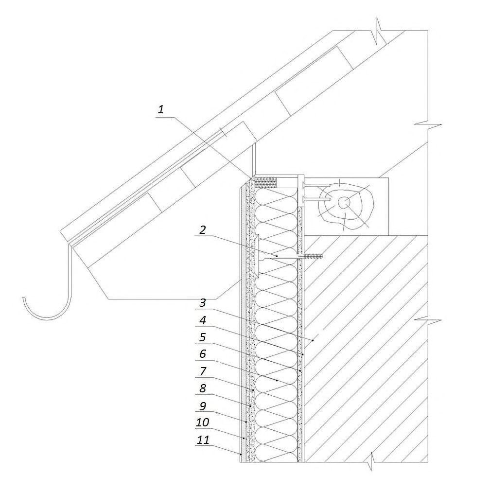
1 - уплотнительная лента или примыкающий профиль с уплотнительной лентой; 2 -анкер с тарельчатым дюбелем; 3 - основание; 4 - пропитывающий укрепляющий грунт*; 5 -клеевой слой; 6 -теплоизоляционный слой; 7 -армированный базовый штукатурный слой; 8 -фасадная стеклосетка; 9 -адгезионный грунт*; 10 -декоративно-защитный финишный слой; 11 - окрасочный состав*
\_\_\_\_\_\_\_\_\_\_\_\_\_\_\_\_\_\_
* Применяется при необходимости согласно документации системодержателя.
Рисунок А.1 - Примыкание системы к кровле
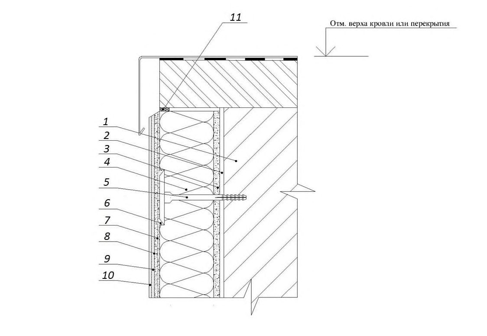
1 -основание; 2 -пропитывающий укрепляющий грунт*; 3 -клеевой слой; 4 - теплоизоляционный слой; 5 - анкер с тарельчатым дюбелем; 6 - армированный базовый штукатурный слой; 7 - фасадная стеклосетка; 8 - адгезионный грунт*; 9 -декоративно-защитный финишный слой; 10 -окрасочный состав*; 11 -уплотнительная лента или примыкающий профиль с уплотнительной лентой
\_\_\_\_\_\_\_\_\_\_\_\_\_\_\_\_\_\_\_\_\_\_
* Применяется при необходимости согласно документации системодержателя.
Рисунок А.2 - Примыкание системы к плоской кровле с выносным парапетом
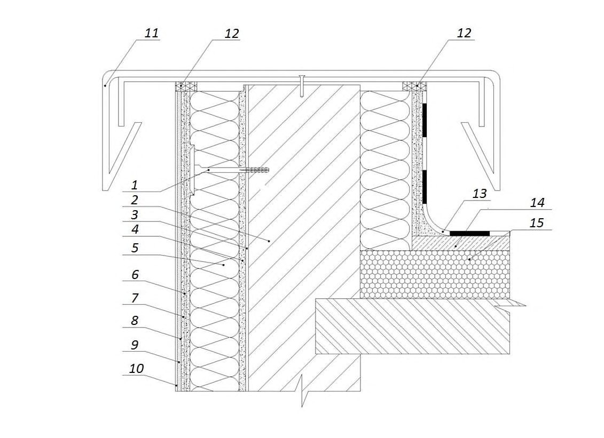
1 - анкер с тарельчатым дюбелем; 2 - основание; 3 - пропитывающий укрепляющий грунт*; 4 - клеевой слой; 5 - теплоизоляционный слой; 6 - армированный базовый штукатурный слой; 7 - фасадная стеклосетка; 8 - адгезионный грунт*; 9 - декоративнозащитный финишный слой; 10 - окрасочный состав*; 11 - козырек парапета (по проекту); 12 - уплотнительная лента или примыкающий профиль с уплотнительной лентой; 13 -гидроизоляция; 14 - стяжка; 15 - теплоизоляционный слой
\_\_\_\_\_\_\_\_\_\_\_\_\_\_\_\_\_\_\_\_\_\_\_\_
* Применяется при необходимости согласно документации системодержателя.
Рисунок А.3 - Завершение системы на парапете
1 -основание; 2 -пропитывающий укрепляющий грунт*; 3 -клеевой слой; 4 - теплоизоляционный слой; 5 - анкер с тарельчатым дюбелем; 6 - армированный базовый штукатурный слой; 7 -фасадная стеклосетка; 8 -адгезионный грунт*; 9 -декоративно-защитный финишный слой; 10 - цокольный профиль; 11 - уплотнительная лента или примыкающий профиль с уплотнительной лентой; 12 - окрасочный состав*; 13 -гидроизоляция; 14 - теплоизоляционный слой из экструдированного пенополистирола; 15 -фасадный герметик; 16 - отмостка с подготовкой (по проекту)
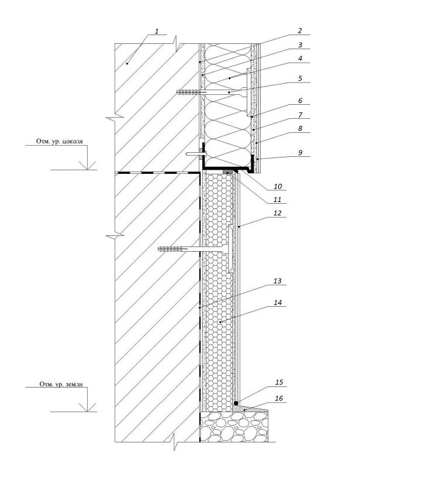
\_\_\_\_\_\_\_\_\_\_\_\_\_\_\_\_\_\_\_\_\_\_\_\_\_
* Применяется при необходимости согласно документации системодержателя.
Рисунок А.4 - Примыкание системы к утепляемому цоколю
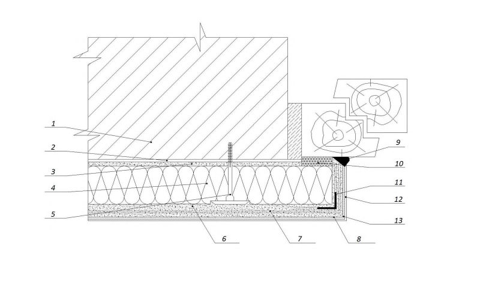
1 - основание; 2 - пропитывающий укрепляющий грунт*; 3 - клеевой слой; 4 - теплоизоляционный слой; 5 - анкер с тарельчатым дюбелем; 6 - армированный базовый штукатурный слой; 7 - фасадная стеклосетка; 8 - адгезионный грунт*; 9 - фасадный герметик или примыкающий профиль с уплотнительной лентой; 10 - уплотнительная лента или полиуретановая пена; 11 - угловой профиль с фасадной стеклосеткой; 12 - окрасочный состав*; 13 - декоративно-защитный финишный слой
\_\_\_\_\_\_\_\_\_\_\_\_\_\_\_\_\_
* Применяется при необходимости согласно документации системодержателя.
Рисунок А.5 - Примыкание системы сбоку к окнам (дверям), установленным в плоскости со стеной
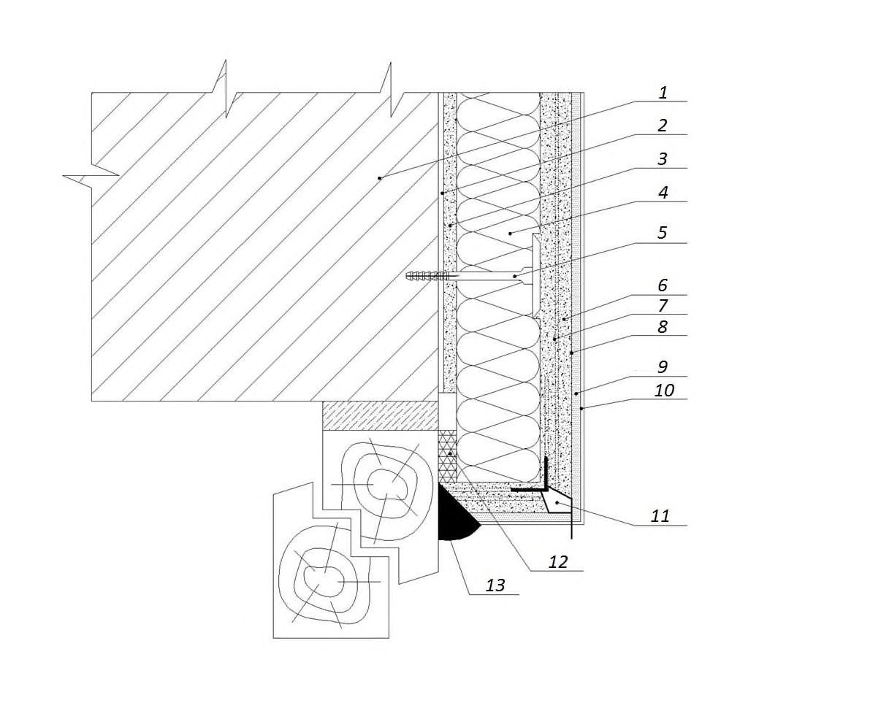
1 - основание; 2 - пропитывающий укрепляющий грунт*; 3 - клеевой слой; 4 - теплоизоляционный слой; 5 - анкер с тарельчатым дюбелем; 6 - армированный базовый штукатурный слой; 7 - фасадная стеклосетка; 8 - адгезионный грунт*; 9 - декоративнозащитный финишный слой; 10 - окрасочный состав*; 11 - угловой профиль-капельник с фасадной стеклосеткой; 12 -уплотнительная лента или полиуретановая пена; 13 - фасадный герметик или примыкающий профиль с уплотнительной лентой
\_\_\_\_\_\_\_\_\_\_\_\_\_\_\_\_\_\_\_\_\_
* Применяется при необходимости согласно документации системодержателя.
Рисунок А.6 - Примыкание системы сверху к окнам (дверям), установленным в плоскости со стеной
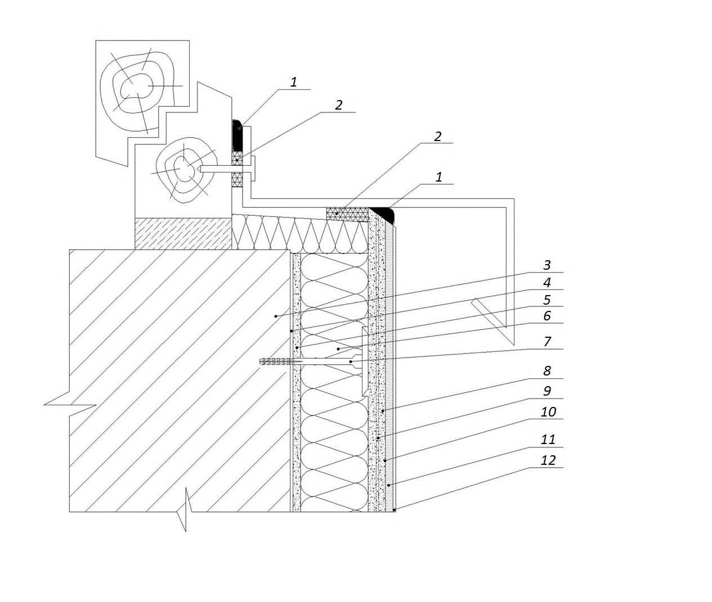
1 - фасадный герметик; 2 - уплотнительная лента; 3 - основание; 4 - пропитывающий укрепляющий грунт*; 5 - клеевой слой; 6 - теплоизоляционный слой; 7 - анкер с тарельчатым дюбелем; 8 - армированный базовый штукатурный слой; 9 - фасадная стеклосетка; 10 -адгезионный грунт*; 11 - декоративно-защитный финишный слой; 12 - окрасочный состав*
\_\_\_\_\_\_\_\_\_\_\_\_\_\_\_\_\_\_\_
* Применяется при необходимости согласно документации системодержателя.
Рисунок А.7 - Примыкание системы к подоконному отливу
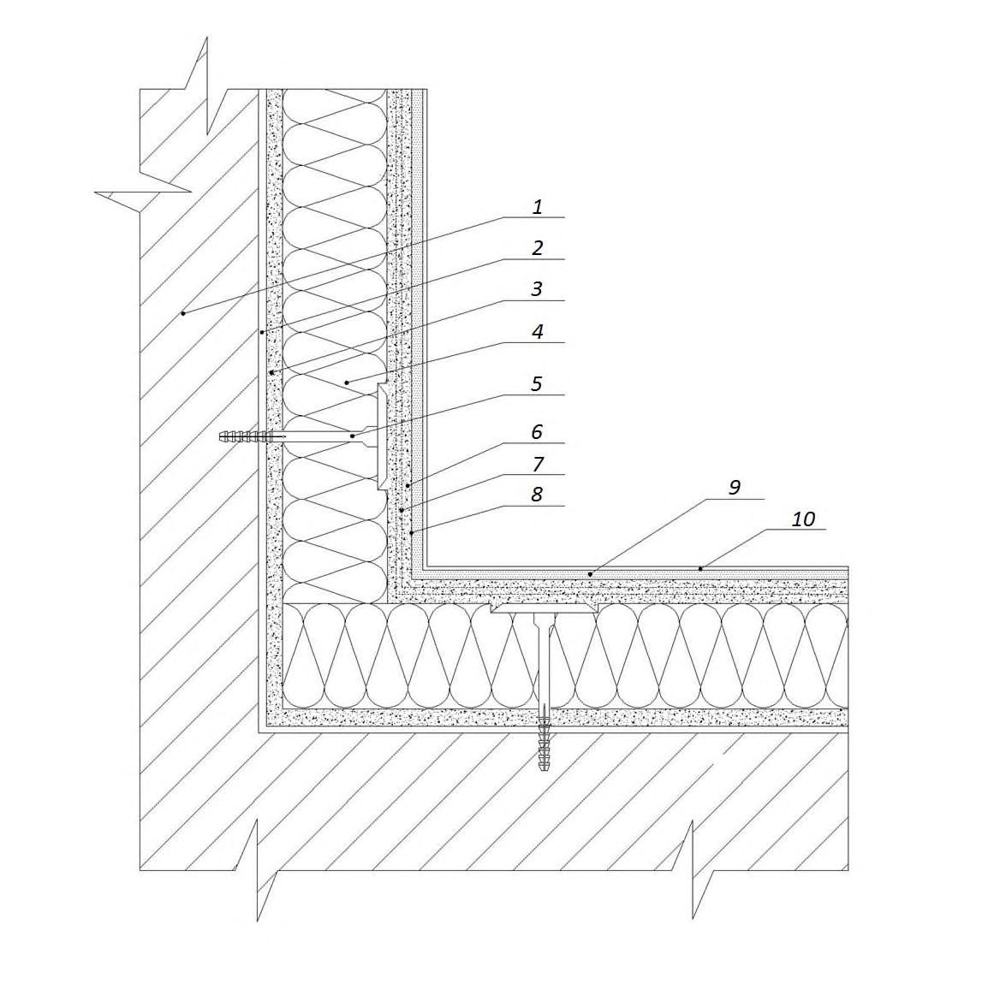
1 - основание; 2 - пропитывающий укрепляющий грунт*; 3 - клеевой слой; 4 - теплоизоляционный слой; 5 - анкер с тарельчатым дюбелем; 6 - армированный базовый штукатурный слой; 7 - фасадная стеклосетка; 8 - адгезионный грунт*; 9 - декоративнозащитный финишный слой; 10 - окрасочный состав*
\_\_\_\_\_\_\_\_\_\_\_\_\_\_\_\_\_\_\_\_
* Применяется при необходимости согласно документации системодержателя.
Рисунок А.8 - Установка системы на внутреннем углу здания
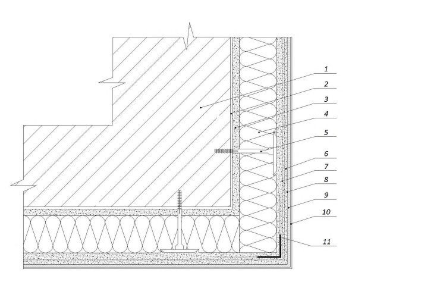
1 -основание; 2 -пропитывающий укрепляющий грунт*; 3 -клеевой слой; 4 - теплоизоляционный слой; 5 - анкер с тарельчатым дюбелем; 6 - армированный базовый штукатурный слой; 7 -фасадная стеклосетка; 8 -адгезионный грунт*; 9 -декоративно-защитный финишный слой; 10 - окрасочный состав*; 11 - угловой профиль с фасадной стеклосеткой
\_\_\_\_\_\_\_\_\_\_\_\_\_\_\_\_\_\_\_\_\_\_
* Применяется при необходимости согласно документации системодержателя.
Рисунок А.9 - Установка системы на внешнем углу здания
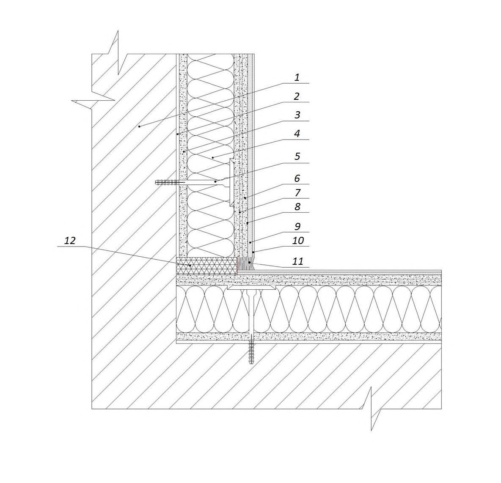
1 - основание; 2 - пропитывающий укрепляющий грунт*; 3 - клеевой слой; 4 - теплоизоляционный слой; 5 - анкер с тарельчатым дюбелем; 6 - армированный базовый штукатурный слой; 7 - фасадная стеклосетка; 8 - адгезионный грунт*; 9 - декоративнозащитный финишный слой; 10 - окрасочный состав*; 11 - фасадный герметик или примыкающий профиль с уплотнительной лентой; 12 -уплотнительная лента или полиуретановая пена
\_\_\_\_\_\_\_\_\_\_\_\_\_\_\_\_\_\_\_\_
* Применяется при необходимости согласно документации системодержателя.
Рисунок А.10 - Примыкание системы к существующей системе теплоизоляции
1 - основание; 2 - пропитывающий укрепляющий грунт*; 3 - клеевой слой; 4 - теплоизоляционный слой; 5 - анкер с тарельчатым дюбелем; 6 - армированный базовый штукатурный слой; 7 - фасадная стеклосетка; 8 - деформационный профиль; 9 - адгезионный грунт*; 10 - декоративно-защитный финишный слой; 11 - окрасочный состав*
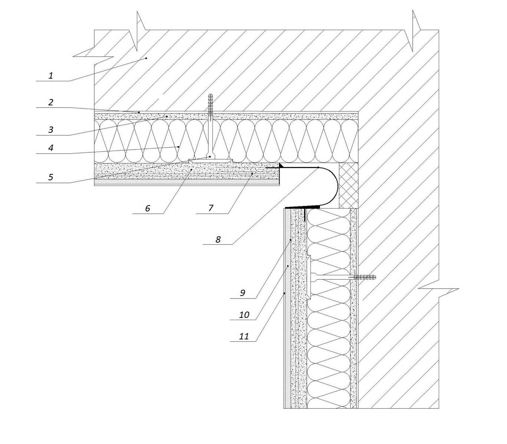
\_\_\_\_\_\_\_\_\_\_\_\_\_\_\_\_\_\_\_\_\_
* Применяется при необходимости согласно документации системодержателя.
Рисунок А.11 - Установка углового деформационного профиля
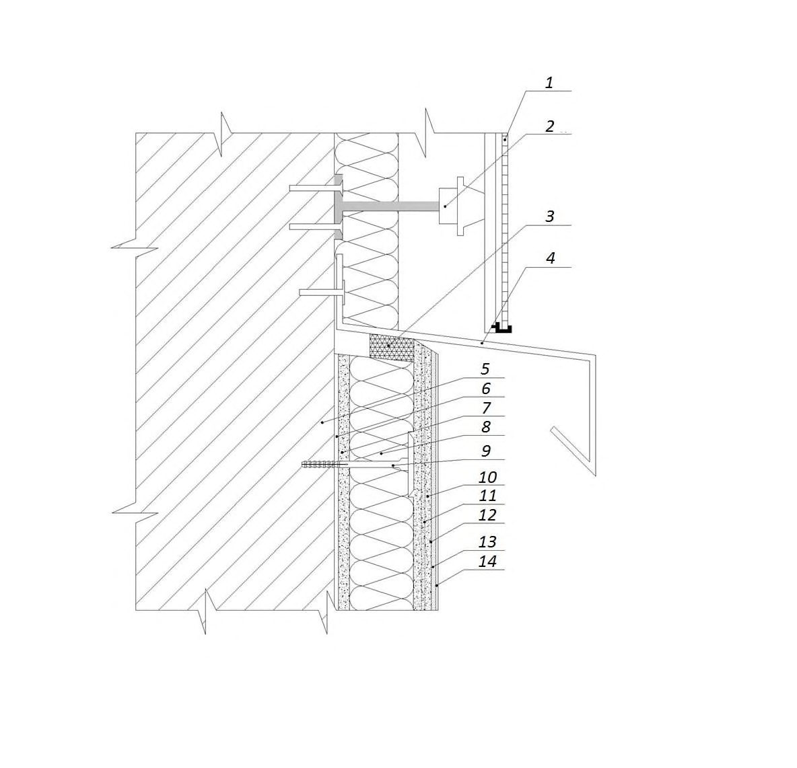
1 - облицовочный слой системы вентилируемого фасада; 2 - крепежный элемент системы вентилируемого фасада; 3 - уплотнительная лента или примыкающий профиль с уплотнительной лентой; 4 -торцевой профиль системы вентилируемого фасада; 5 -основание; 6 -пропитывающий укрепляющий грунт*; 7 -клеевой слой; 8 -теплоизоляционный слой; 9 - анкер с тарельчатым дюбелем; 10 - армированный базовый штукатурный слой; 11 - фасадная стеклосетка; 12 - адгезионный грунт*; 13 - декоративнозащитный финишный слой; 14 - окрасочный состав*
\_\_\_\_\_\_\_\_\_\_\_\_\_\_\_\_\_\_\_\_\_\_\_\_
* Применяется при необходимости согласно документации системодержателя.
Рисунок А.12 - Примыкание системы к конструкции вентилируемого фасада
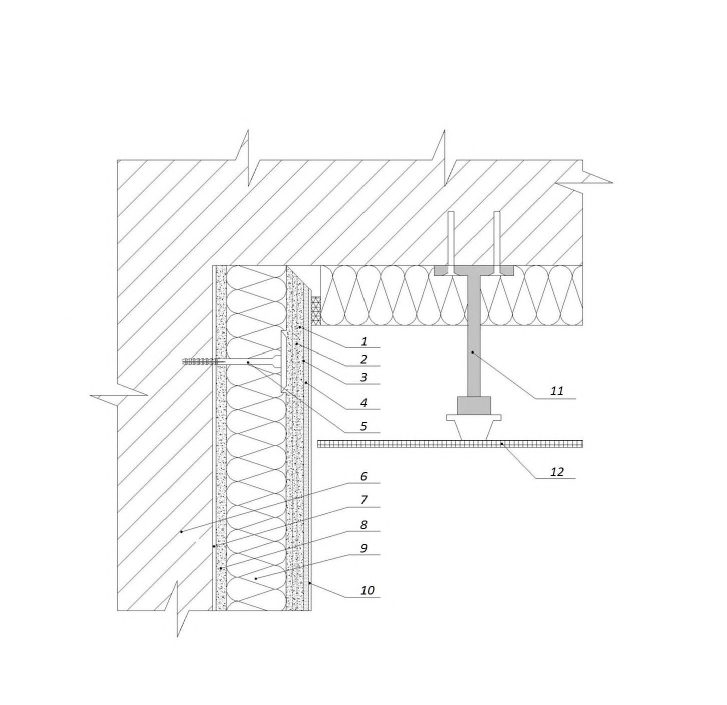
1 - армированный базовый штукатурный слой; 2 -фасадная стеклосетка; 3 -адгезионный грунт*; 4 - декоративно-защитный финишный слой; 5 - анкер с тарельчатым дюбелем; 6 - основание; 7 - пропитывающий укрепляющий грунт*; 8 - клеевой слой; 9 - теплоизоляционный слой; 10 - окрасочный состав*; 11 - крепежный элемент системы вентилируемого фасада; 12 - облицовочный слой системы вентилируемого фасада
\_\_\_\_\_\_\_\_\_\_\_\_\_\_\_\_\_\_\_\_\_\_
* Применяется при необходимости согласно документации системодержателя.
Рисунок А.13 - Примыкание системы к конструкции вентилируемого фасада на внутренних углах
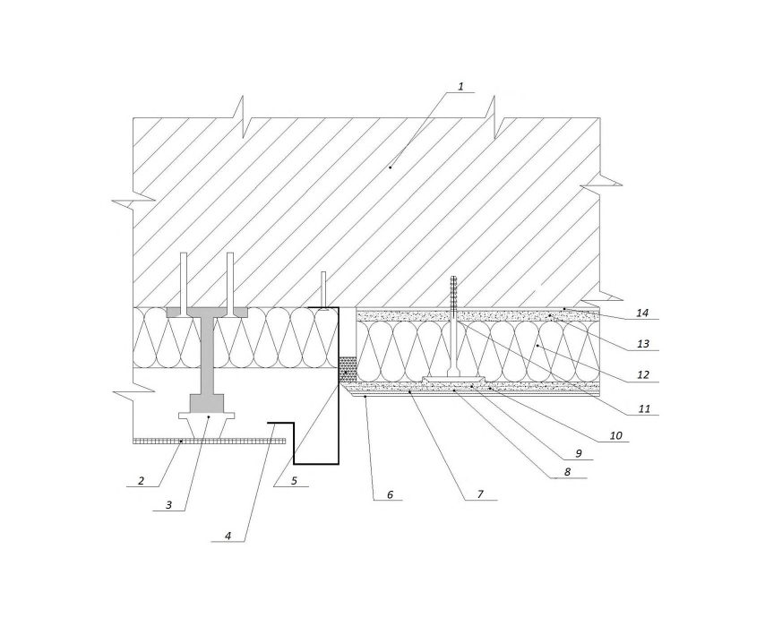
1 - основание; 2 - облицовочный слой системы вентилируемого фасада; 3 - крепежный элемент системы вентилируемого фасада; 4 - торцевой профиль системы вентилируемого фасада; 5 - уплотнительная лента или примыкающий профиль с уплотнительной лентой; 6 -окрасочный состав*; 7 - декоративно-защитный финишный слой; 8 - адгезионный грунт*; 9 -фасадная стеклосетка; 10 -армированный базовый штукатурный слой; 11 -анкер с тарельчатым дюбелем; 12 - теплоизоляционный слой; 13 - клеевой слой; 14 - пропитывающий укрепляющий грунт*
\_\_\_\_\_\_\_\_\_\_\_\_\_\_\_\_\_\_\_\_\_\_\_\_\_\_\_\_
* Применяется при необходимости согласно документации системодержателя.
Рисунок А.14 - Примыкание системы к конструкции вентилируемого фасада сбоку
БПриложение Б. Методика определения вытягивающего усилия анкерного крепления СФТК
Б.1 В настоящем приложении установлены основные положения проведения и обработки результатов натурных испытаний по определению среднего значения нагрузки и расчетного сопротивления анкера с тарельчатым дюбелем вытягивающему усилию из основания (анкерного крепления СФТК).
Б.2Общие положения
Б.2.1 Несущая способность отдельного анкерного крепления СФТК определяется минимальным значением вытягивающего усилия, приложенного вдоль оси установленного в строительном основании единичного анкера с тарельчатым дюбелем, при котором происходят потеря его устойчивости или разрушение.
Б.2.2 Несущая способность от отдельного анкерного крепления определяется по результатам статического испытания на его вытягивание из основания путем приложения нарастающей нагрузки.
Б.2.3 Проведение натурных испытаний должно осуществляться представителями организации, аккредитованной (уполномоченной) на проведение данных работ в установленном порядке.
Б.3Требования к испытательному оборудованию
Б.3.1 Для определения вытягивающего усилия единичного анкерного крепления следует применять испытательное оборудование, обеспечивающее надежный захват тарельчатого элемента анкера и приложение вытягивающего усилия перпендикулярно плоскости основания (вдоль оси анкера с тарельчатым дюбелем).
Б.3.2 Конструкция испытательного оборудования должна предусматривать возможность нагружения испытуемого анкерного крепления с постоянной скоростью и достаточным усилием до его разрушения.
Б.3.3 Конструкция испытательного оборудования должна предусматривать не менее трех опорных стоек, независимо регулируемых по высоте, равноудаленных от центральной оси оборудования и обеспечивающих плотное прилегание к строительному основанию.
Б.3.4 Допускается использовать оборудование, предназначенное для определения предела прочности сцепления материалов с основанием (адгезии), при условии обеспечения вышеуказанных требований.
Б.3.5 Диапазон измерений испытательного оборудования должен находиться в пределах 0,4-25 кН с погрешностью измерения усилия не более ±2 %.
Б.4Подготовка и проведение испытаний
Б.4.1 Испытания проводят непосредственно на объекте капитального строительства после набора строительным основанием проектной прочности.
Б.4.2 Перед началом испытаний в присутствии представителя испытательной организации на выбранных участках проводят установку требуемого количества анкеров с тарельчатым дюбелем.
Б.4.3 Технология установки анкеров с тарельчатым дюбелем должна соответствовать технической документации изготовителя и требованиям настоящего свода правил.
Б.4.4 Испытания анкеров с тарельчатым дюбелем проводят сериями по 15 шт. для каждого вида основания, подготовленного под установку СФТК. Если площадь одного вида основания превышает 3000 м² , количество серий испытаний увеличивают кратно целому значению отношения площади основания к 3000 м² . Допускается сократить количество анкеров, подлежащих испытанию в серии, до 5 шт. при повторении результатов первых пяти значений с отклонением не более 5 % и коэффициенте вариации v не более 5 %.
Б.4.5 В случае явной разнородности материала основания (монолитный каркас с заполнением различными видами штучных материалов и т. п.) испытания проводят на каждом из участков, а расчетное сопротивление анкеров с тарельчатым дюбелем вытягивающему усилию из основания принимают по наименьшему полученному результату испытаний.
Б.4.6 Испытание анкерного крепления проводят путем приложения к анкеру с тарельчатым дюбелем вытягивающего усилия с постоянной скоростью, доводя анкерное крепление до разрушения в течение 1-2 мин. В качестве единичных результатов испытаний анкерного крепления Ni принимают максимальное значение вытягивающей нагрузки на анкер по достижении одного из перечисленных состояний:
- разрушение основания в месте установки анкера с тарельчатым дюбелем; - разрушение анкера с тарельчатым дюбелем;
- окончание зоны упругих деформаций, сопровождаемое проскальзыванием с последующим вытягиванием анкера с тарельчатым дюбелем из основания или распорного элемента и характеризуемое снижением сопротивления вытягивающему усилию.
Б.5Обработка результатов
Б.5.1 Характеристики несущей способности анкера с тарельчатым дюбелем определяют исходя из единичных значений разрушающей нагрузки.
Б.5.2 Из ряда полученных единичных значений вытягивающего усилия исключают значения, отличающиеся от среднего более чем на 20 %.
Б.5.3 В серии оставшихся единичных результатов испытаний Ni , кH, рассчитывают среднее значение нагрузки N , среднее квадратическое отклонение единичных значений нагрузки S , кН, и коэффициент вариации v , %, по формулам:
где Ni - единичное значение нагрузки в серии результатов испытаний, кН; n
- число результатов в серии испытаний.
- Б.5.4 Расчетное сопротивление тарельчатого анкера вытягивающему усилию из основания F р, кН, по результатам натурных испытаний определяют по формуле
где N - среднее значение разрушающей нагрузки, определяемое в серии результатов испытаний по формуле (Б.1), кН; t - коэффициент Оуэна, соответствующий нижней границе несущей способности анкера с обеспеченностью 0,95 при достоверности 90 %, принимаемый по таблице Б.1; m - коэффициент надежности по материалу, характеризующий, в том числе, среднее соотношение между разрушающей нагрузкой и нагрузкой, соответствующей окончанию зоны упругих деформаций. Для тарельчатых анкеров значение коэффициента m принимают равным 5.
Таблица Б.1 Значения коэффициента t
| Число единичных результатов испытаний, принятых в расчете n | Значение коэффициента t |
|---|---|
| 5 | 3,400 |
| 6 | 3,091 |
| 7 | 2,894 |
| 8 | 2,755 |
| 9 | 2,649 |
| 10 | 2,568 |
| 11 | 2,503 |
| 12 | 2,448 |
| 13 | 2,403 |
| 14 | 2,363 |
| 15 | 2,329 |
- Б.5.5 Результаты испытаний оформляют протоколом, в котором должна быть приведена следующая информация:
- наименование и реквизиты организации, проводившей испытания;
- наименование и реквизиты заказчика проведения испытаний;
- основание для проведения испытаний;
- ответственные исполнители;
- место проведения испытаний;
- дата проведения испытаний;
- температура окружающей среды;
- тип и материал основания;
- визуальная оценка состояния основания;
- марка, тип и длина анкера с тарельчатым дюбелем;
- глубина заделки анкера с тарельчатым дюбелем в основание;
- метод сверления отверстия (ударный/безударный), диаметр бура;
- марка средства измерений;
- единичные результаты испытаний;
- среднее арифметическое значение нагрузки;
- среднее квадратическое отклонение и коэффициент вариации;
- расчетное сопротивление анкера с тарельчатым дюбелем вытягивающему усилию из основания;
- подписи лиц, ответственных за проведение испытаний.
ВПриложение В. Методика расчета требуемого количества анкеров с тарельчатым дюбелем на единицу площади СФТК
В.1 Настоящая методика основана на СП 20.13330 и устанавливает основные положения расчета требуемого количества анкеров с тарельчатым дюбелем на единицу площади СФТК. Расчет выполняют в целях обеспечения надежности крепления фасадной системы к строительному основанию; расчет включает:
- определение расчетного сопротивления анкера с тарельчатым дюбелем вытягивающему усилию из основания;
- расчет пиковой ветровой нагрузки, воздействующей на конструкцию СФТК;
- расчет требуемого количества анкеров с тарельчатым дюбелем на единицу площади СФТК.
В.2 Определение расчетного сопротивления анкера с тарельчатым дюбелем вытягивающему усилию из основания выполняют по результатам натурных испытаний согласно приложению Б.
В.3 Расчет пиковой ветровой нагрузки, воздействующей на конструкцию СФТК, выполняется согласно положениям В.3.1-В.3.4.
В.3.1 При определении надежности крепления СФТК рассматривают пиковые воздействия ветровой нагрузки, направленные на отрыв фасадной системы от конструкции здания.
В.3.2 Пиковую ветровую нагрузку w+ (-), кПа, рассчитывают с точностью до второго знака после запятой по формуле w+
где w 0 - нормативное значение давления ветра, кПа, принимаемое по таблице В.1 в зависимости от ветрового района в местности расположения здания. Ветровые районы принимают по СП 20.13330.2016 (приложение Ж, карта 2); ze - эквивалентная высота,м; k ( ze ) и ζ (ze ) -коэффициенты, учитывающие изменения давления и пульсаций давления ветра соответственно на высоте ze , определяются по таблице В.2; cp -пиковые значения аэродинамических коэффициентов, для прямоугольных в плане зданий допускается принимать:
- в рядовой зоне фасада ср = -1,2;
- в угловой зоне, равной 1/10 части длины фасада, ср = -2,2.
Для остальных типов строения зданий коэффициент ср определяют согласно СП 20.13330; v+ (-) - коэффициент корреляции ветровой нагрузки, для стен площадью более 20 м² принимают равным 0,65.
Таблица В.1 Нормативное значение давление ветр а w 0
| Ветровые районы | Ia | I | II | III | IV | V | VI | VII |
|---|---|---|---|---|---|---|---|---|
| w 0 , кПа | 0,17 | 0,23 | 0,30 | 0,38 | 0,48 | 0,60 | 0,73 | 0,85 |
Таблица В.2 Значения коэффициентов k ( ze ) и ζ( ze )
| Высота z e , м | Коэффициент k ( z e ) для типов местности | Коэффициент k ( z e ) для типов местности | Коэффициент k ( z e ) для типов местности | Коэффициент ζ (z e ) для типов местности | Коэффициент ζ (z e ) для типов местности | Коэффициент ζ (z e ) для типов местности |
|---|---|---|---|---|---|---|
| A | B | C | A | B | C | |
| ≤5 | 0,75 | 0,5 | 0,4 | 0,85 | 1,22 | 1,78 |
| 10 | 1,0 | 0,65 | 0,4 | 0,76 | 1,06 | 1,78 |
| 20 | 1,25 | 0,85 | 0,55 | 0,69 | 0,92 | 1,50 |
| 40 | 1,5 | 1,1 | 0,8 | 0,62 | 0,80 | 1,26 |
| 60 | 1,7 | 1,3 | 1,0 | 0,58 | 0,74 | 1,14 |
| 80 | 1,85 | 1,45 | 1,15 | 0,56 | 0,70 | 1,06 |
| 100 | 2,0 | 1,6 | 1,25 | 0,54 | 0,67 | 1,00 |
| 150 | 2,25 | 1,9 | 1,55 | 0,51 | 0,62 | 0,90 |
| Примечание - Эквивалентную высоту для зданий z e принимают по таблице В.3. | Примечание - Эквивалентную высоту для зданий z e принимают по таблице В.3. | Примечание - Эквивалентную высоту для зданий z e принимают по таблице В.3. | Примечание - Эквивалентную высоту для зданий z e принимают по таблице В.3. | Примечание - Эквивалентную высоту для зданий z e принимают по таблице В.3. | Примечание - Эквивалентную высоту для зданий z e принимают по таблице В.3. | Примечание - Эквивалентную высоту для зданий z e принимают по таблице В.3. |
Таблица В.3 Значения ze
| Отношение высоты здания к размеру здания | Значение z e |
|---|---|
| h ≤ d | z e = h |
| d < h ≤ 2 d | Для z ≥ h-d z e = h Для 0 < z < h-d z e = d |
| h > 2 d | Для z ≥ h-d z e = h Для d < z < h-d z e = z Для 0 < z ≤ d z e = d |
Примечание z - высота расчетной точки от поверхности земли; h - высота здания; d - размер здания (без учета его стилобатной части) в направлении, перпендикулярном расчетному направлению ветра (поперечный размер).
В.3.3 При расчете по таблице В.2 принимают следующие типы местности:
А - открытые побережья морей, озер и водохранилищ, сельские местности, в том числе с постройками высотой менее 10 м, пустыни, степи, лесостепи, тундра;
В - городские территории, лесные массивы и другие местности, равномерно покрытые препятствиями высотой более 10 м;
С - городские районы с плотной застройкой зданиями высотой более 25 м.
В.3.4 Сооружение считается расположенным в местности данного типа, если эта местность сохраняется с наветренной стороны сооружения на расстоянии 30 h - при высоте сооружения h до 60 м и на расстоянии 2 км - при h > 60 м.
В.4 Расчет требуемого количества анкеров с тарельчатым дюбелем на единицу площади СФТК, шт./м² , выполняют с учетом расчетных ветровых нагрузок, действующих на СФТК, и расчетного сопротивления анкеров с тарельчатым дюбелем вытягивающему усилию из основания по формуле
Ndm
где w+ (-) - пиковая ветровая нагрузка, кПа (кН/м² ), определяемая по формуле (В.1);
F рч -расчетное сопротивление анкера с тарельчатым дюбелем вытягивающему усилию из основания, кН, согласно приложению Б.
- В.5 Полученные значения Ndm округляют в большую сторону до первого знака после запятой. Если полученное по формуле (В.2) значение Ndm ниже минимально допускаемого значения Ndm = 5, принимают конечный результат согласно минимальному допуску.
- В.6 Примеры расчета требуемого количества анкеров с тарельчатым дюбелем на единицу площади СФТК для объектов, расположенных в различных ветровых районах
В.6.1 Пример расчета требуемого количества на единицу площади СФТК с комбинированной теплоизоляцией анкеров с тарельчатым дюбелем с расчетным сопротивлением тарельчатого анкера вытягивающему усилию из основания 0,2 кН, для прямоугольного в плане здания высотой 40 м (ветровой район III, тип местности B).
Исходные данные:
- нормативное значение давления ветра w 0 = 0,38 кПа;
- эквивалентная высота здания ze = 40 м;
- коэффициент изменения давления ветра k(ze) = 1,1;
- коэффициент пульсаций давления ветра ζ(ze ) = 0,8;
- пиковые значения аэродинамических коэффициентов:
- в рядовой зоне фасада ср = -1,2;
- в угловой зоне ср = -2,2;
- коэффициент корреляции ветровой нагрузки v+ (-) =0,65;
- расчетное сопротивление анкера с тарельчатым дюбелем вытягивающему усилию из основания F р = 0,2 кН.
Расчет пиковой ветровой нагрузки на фасад здания:
- пиковая ветровая нагрузка для рядовой зоны здания согласно формуле (В.1) составляет:
- пиковая ветровая нагрузка для угловой зоны здания согласно формуле (В.1) составляет:
Расчет требуемого количества тарельчатых анкеров на единицу площади СФТК:
- для рядовой зоны фасада здания требуемое количество тарельчатых анкеров на единицу площади СФТК согласно формуле (В.2) составляет:
Согласно требованию настоящего свода правил принимают минимально допустимое значение Ndm = 5 шт./м² ;
- для угловой зоны фасада здания требуемое количество тарельчатых анкеров на единицу площади СФТК согласно формуле (В.2) составляет:
В.6.2 Пример расчета требуемого количества на единицу площади СФТК с теплоизоляцией из минераловатных плит анкеров с тарельчатым дюбелем с расчетным сопротивлением тарельчатого анкера вытягивающему усилию из основания 0,25 кН, для прямоугольного в плане здания высотой 40 м, расположенного на открытом побережье (ветровой район IV, тип местности А).
Исходные данные:
- нормативное значение давления ветра w 0 = 0,48 кПа;
- эквивалентная высота здания ze = 40 м;
- коэффициент изменения давления ветра k ( ze ) = 1,5;
- коэффициент пульсаций давления ветра ζ( ze ) = 0,62;
- пиковые значения аэродинамических коэффициентов:
- в рядовой зоне фасада ср = -1,2;
- в угловой зоне ср = -2,2;
- коэффициент корреляции ветровой нагрузки v + (-) = 0,65;
- расчетное сопротивление анкера с тарельчатым дюбелем вытягивающему усилию из основания F р = 0,25 кН.
Расчет пиковой ветровой нагрузки на фасад здания:
- пиковая ветровая нагрузка для рядовой зоны здания согласно формуле (В.1) составляет:
- пиковая ветровая нагрузка для угловой зоны здания согласно формуле (В.1) составляет:
Расчет требуемого количества анкеров с тарельчатым дюбелем на единицу площади СФТК:
- для рядовой зоны фасада здания требуемое количество анкеров с тарельчатым дюбелем на единицу площади СФТК согласно формуле (В.2) составляет:
Согласно требованию настоящего свода правил принимают минимально допустимое значение Ndm = 5 шт./м² ;
- для угловой зоны фасада здания требуемое количество анкеров с тарельчатым дюбелем на единицу площади СФТК согласно формуле (В.2) составляет:
ГПриложение Г. Карта контроля соблюдения требований по устройству СФТК
КАРТА КОНТРОЛЯ
выполненных работ по устройству системы фасадной теплоизоляционной композиционной с наружными штукатурными слоями и требования к их результатам
\_\_\_\_\_\_\_\_\_\_\_\_\_\_\_\_\_\_\_\_\_\_\_\_\_\_\_\_\_\_\_\_\_\_\_\_\_\_\_\_\_\_\_\_\_\_\_\_\_\_\_\_\_\_\_\_\_\_\_\_\_\_\_\_\_\_\_\_\_\_\_\_\_\_\_\_\_\_
(наименование организации - производителя работ)
ОГРН \_\_\_\_\_\_\_\_\_\_\_\_\_ ИНН\_\_\_\_\_\_\_\_\_\_\_\_\_\_ Номер свидетельства о допуске\_\_\_\_\_\_\_\_\_\_\_\_\_
\_\_\_\_\_\_\_\_\_\_\_\_\_\_\_\_\_\_\_\_\_\_\_\_\_\_\_\_\_\_\_\_\_\_\_\_\_\_\_\_\_\_\_\_\_\_\_\_\_\_\_\_\_\_\_\_\_\_\_\_\_\_\_\_\_\_\_\_\_\_\_\_\_\_\_\_\_\_
(сведения об объекте)
\_\_\_\_\_\_\_\_\_\_\_\_\_\_\_\_\_\_\_\_\_\_\_\_\_\_\_\_\_\_\_\_\_\_\_\_\_\_\_\_\_\_\_\_\_\_\_\_\_\_\_\_\_\_\_\_\_\_\_\_\_\_\_\_\_\_\_\_\_\_\_\_\_\_\_\_\_\_\_
(основание для проведения проверки)
\_\_\_\_\_\_\_\_\_\_\_\_\_\_\_\_\_\_\_\_\_\_\_\_\_\_\_\_\_\_\_\_\_\_\_\_\_\_\_\_\_\_\_\_\_\_\_\_\_\_\_\_\_\_\_\_\_\_\_\_\_\_\_\_\_\_\_\_\_\_\_\_\_\_\_\_\_\_\_
(наименование организации, проводящей проверку)
Тип проверки (нужное подчеркнуть):
Выездная
Документарная
Таблица Г.1 Состав карты контроля
| № | Подлежит | Требования, предъявляемые при | Способ проверки | Результат | Результат | Приложение, примечание | |
|---|---|---|---|---|---|---|---|
| п/п | Элемент контроля | проверке | про5ведении работ | соответствия | Норма | Соответствие («+», «-») | |
| Этап 1: Организация строительного производства | Этап 1: Организация строительного производства | Этап 1: Организация строительного производства | Этап 1: Организация строительного производства | Этап 1: Организация строительного производства | Этап 1: Организация строительного производства | Этап 1: Организация строительного производства | Этап 1: Организация строительного производства |
| 1.1 | Контракт (Договор) на выполнение работ по устройству СФТК | Наличие оригинального документа | Документарный | ||||
| 1.2 | Проектная документация | Наличие в утвержденной проектной документации разделов по устройству СФТК | Документарный | Соответствие требованиям постановления Правительства Российской Федерации от 16 февраля 2008 №87 [5]. Наличие проектной документации со штампом в производство работ | |||
| 1.3 | Рабочая документация | Наличие ППР на устройство СФТК (включая календарный план) | Документарный | Соответствие ППР требованиям проектной документации. Наличие технической документации системодержателя | |||
| 1.4 | Исполнительная документация | Наличие журналов производства работ | Документарный | Соответствие требованиям [7] |
Продолжение таблицы Г.1
| № п/п | Элемент контроля | Подлежит проверке | Требования, предъявляемые при | Способ проверки | Результат | Результат | Приложение, примечание |
|---|---|---|---|---|---|---|---|
| проведении работ | соответствия | Норма | Соответствие («+», «-») | ||||
| 1.5 | Основание | Наличие акта приемки-передачи фасада под отделку | Документарный | По форме приложения Д настоящего свода правил. При наличии дефектов и (или) иных отклонений основания, подлежащих устранению, обязательной проверке подлежат работы по подготовке основания (этап 3 настоящей Карты контроля) | |||
| 1.6 | Метрологическая поверка используемых средств измерений | Наличие документа установленного образца в соответствии с действующим законодательством Российской Федерации [3] на каждое используемое средство измерений | Документарный | Обязательной проверке подлежат: а) рулетка по ГОСТ 7502; б) теодолит-нивелир по ГОСТ 10528; в) уровень/правило по ГОСТ 25782; г) разметочный шнур по ГОСТ 29231; д) строительный отвес по ГОСТ 7948 |
Продолжение таблицы Г.1
| № п/п | Подлежит | Требования, предъявляемые при | Способ проверки | Результат | Результат | Приложение, примечание | |
|---|---|---|---|---|---|---|---|
| Элемент контроля | проверке | проведении работ | соответствия | Норма | Соответствие («+», «-») | Приложение, примечание | |
| Этап 2: Входной контроль и хранение поставленных комплектующих материалов и изделий | Этап 2: Входной контроль и хранение поставленных комплектующих материалов и изделий | Этап 2: Входной контроль и хранение поставленных комплектующих материалов и изделий | Этап 2: Входной контроль и хранение поставленных комплектующих материалов и изделий | Этап 2: Входной контроль и хранение поставленных комплектующих материалов и изделий | Этап 2: Входной контроль и хранение поставленных комплектующих материалов и изделий | Этап 2: Входной контроль и хранение поставленных комплектующих материалов и изделий | Этап 2: Входной контроль и хранение поставленных комплектующих материалов и изделий |
| 2.1 | Поставленные комплектующие материалы и изделия | В соответствии со сводной ведомостью проектной документации и технической документации системодержателя | Документарный | Наличие журнала учета входного контроля с обязательным заполнением следующих граф: а) тип/марка продукции; б) номер партии, дата изготовления и номер сопроводительного документа; в) количество продукции | |||
| 2.2 | Хранение поставленных комплектующих материалов и изделий | Материалы и изделия следует хранить с обеспечением защиты от воздействия атмосферных осадков и солнечных лучей | Визуальный |
Продолжение таблицы Г.1
| № | Элемент контроля | Подлежит проверке | Требования, предъявляемые при | Способ проверки соответствия | Результат | Результат | Приложение, примечание |
|---|---|---|---|---|---|---|---|
| п/п | проведении работ | Норма | Соответствие («+», «-») | ||||
| Этап 3: Подготовка основания под установку СФТК Работы по данному этапу проводят в соответствии с решением комиссии (указанным в акте приема-передачи фасада под отделку) о неудовлетворительном состоянии основания и необходимости проведения работ по его подготовке (см. 1.5 настоящей Карты контроля) | Этап 3: Подготовка основания под установку СФТК Работы по данному этапу проводят в соответствии с решением комиссии (указанным в акте приема-передачи фасада под отделку) о неудовлетворительном состоянии основания и необходимости проведения работ по его подготовке (см. 1.5 настоящей Карты контроля) | Этап 3: Подготовка основания под установку СФТК Работы по данному этапу проводят в соответствии с решением комиссии (указанным в акте приема-передачи фасада под отделку) о неудовлетворительном состоянии основания и необходимости проведения работ по его подготовке (см. 1.5 настоящей Карты контроля) | Этап 3: Подготовка основания под установку СФТК Работы по данному этапу проводят в соответствии с решением комиссии (указанным в акте приема-передачи фасада под отделку) о неудовлетворительном состоянии основания и необходимости проведения работ по его подготовке (см. 1.5 настоящей Карты контроля) | Этап 3: Подготовка основания под установку СФТК Работы по данному этапу проводят в соответствии с решением комиссии (указанным в акте приема-передачи фасада под отделку) о неудовлетворительном состоянии основания и необходимости проведения работ по его подготовке (см. 1.5 настоящей Карты контроля) | Этап 3: Подготовка основания под установку СФТК Работы по данному этапу проводят в соответствии с решением комиссии (указанным в акте приема-передачи фасада под отделку) о неудовлетворительном состоянии основания и необходимости проведения работ по его подготовке (см. 1.5 настоящей Карты контроля) | Этап 3: Подготовка основания под установку СФТК Работы по данному этапу проводят в соответствии с решением комиссии (указанным в акте приема-передачи фасада под отделку) о неудовлетворительном состоянии основания и необходимости проведения работ по его подготовке (см. 1.5 настоящей Карты контроля) | Этап 3: Подготовка основания под установку СФТК Работы по данному этапу проводят в соответствии с решением комиссии (указанным в акте приема-передачи фасада под отделку) о неудовлетворительном состоянии основания и необходимости проведения работ по его подготовке (см. 1.5 настоящей Карты контроля) |
| 3.1 | Основание | Подготовка основания | Документарный | Наличие акта освидетельствования скрытых работ с указанием о фактических отклонениях от плоскости и отметкой о выполненных мероприятиях по подготовке основания (с учетом требований ППР), предусмотренных решением комиссии в акте приемки-передачи фасада под отделку | |||
| Этап 4: Монтаж опорного (цокольного) профиля | Этап 4: Монтаж опорного (цокольного) профиля | Этап 4: Монтаж опорного (цокольного) профиля | Этап 4: Монтаж опорного (цокольного) профиля | Этап 4: Монтаж опорного (цокольного) профиля | Этап 4: Монтаж опорного (цокольного) профиля | Этап 4: Монтаж опорного (цокольного) профиля | Этап 4: Монтаж опорного (цокольного) профиля |
| 4.1 | Опорный (цокольный) профиль | Контроль закрепления и примыкания к строительному основанию | Документарный | Запись в журнале производства работ о соответствии выполненных работ требованиям ППР | |||
| Этап 5: Крепеж теплоизоляционных плит к основанию | Этап 5: Крепеж теплоизоляционных плит к основанию | Этап 5: Крепеж теплоизоляционных плит к основанию | Этап 5: Крепеж теплоизоляционных плит к основанию | Этап 5: Крепеж теплоизоляционных плит к основанию | Этап 5: Крепеж теплоизоляционных плит к основанию | Этап 5: Крепеж теплоизоляционных плит к основанию | Этап 5: Крепеж теплоизоляционных плит к основанию |
| 5.1 | Применяемый клеевой состав | Тип и норма расхода клеевого состава определены в ППР и технической документации системодержателя | Документарный | Проверить наличие в ППР инструкции с описанием процедуры приготовления и нанесения клеевого состава на теплоизоляционную плиту |
Продолжение таблицы Г.1
| Подлежит проверке | Требования, предъявляемые проведении работ | Способ | Результат | Результат | Приложение, примечание | ||
|---|---|---|---|---|---|---|---|
| № п/п | Элемент контроля | при | проверки соответствия | Норма | Соответст- вие («+», «-») | ||
| 5.2 | Нанесение клеевого состава | Контроль нанесения клеевого состава на обратную поверхность теплоизоляционных плит | Документарный | Запись в журнале производства работ о выбранной схеме нанесения клеевого состава в соответствии с требованиями ППР | |||
| 5.3 | Установка тепло- изоляционных плит | Контроль вертикальности (в отдельных случаях заданного уклона) установленных теплоизоляционных плит | Документарный | Запись в журнале производства работ о фактических отклонениях плоскости от заданного уклона и выполнении работ по устранений неровностей в соответствии с требованиями ППР | |||
| 5.4 | Температурные и деформационные швы | Контроль месторасположения и шага температурных деформационных швов | Документарный | Запись в журнале производства работ о разбивке осевых отметок и типе применяемого деформационного профиля | |||
| 5.5 | Установка элементов усиления тепло- изоляционного слоя вокруг оконных и дверных блоков, а также на внешних углах фасадов | Контроль установки теплоизоляционных плит | Документарный | Запись в журнале производства работ: - о местах установки и типе применяемых элементов дополнительного армирования (уголки, стеклосетки и др.); - местах установки примыкающего профиля и |
| (или) полиуретановой ленты, в соответствии с ППР |
Продолжение таблицы Г.1
| № п/п | Элемент контроля | Подлежит проверке | Требования, предъявляемые при | Способ проверки соответствия | Результат | Результат | Приложение, примечание |
|---|---|---|---|---|---|---|---|
| проведении работ | Норма | Соответствие («+», «-») | |||||
| 5.6 | Противопожарные рассечки при комбинированном тепло- изоляционном слое | Контроль соблюдения требований выполнения противопожарных рассечек | Документарный | Запись в журнале производства работ о материале противопожарных рассечек и местах устройства в соответствии с требованиями проектной документации и ППР | |||
| 5.7 | Механическое крепление тепло- изоляционных плит к основанию | Контроль установки анкеров с тарельчатым полимерным дюбелем | Документарный | Проверка наличия в ППР указания о схеме установки, типе и числе устанавливаемых анкеров (по участкам производства работ). Запись в журнале производства работ о выполненной работе по установке анкеров с тарельчатым полимерным дюбелем |
Продолжение таблицы Г.1
| № | Подлежит | Требования, предъявляемые при | Способ проверки | Результат | Результат | Приложение, примечание | |
|---|---|---|---|---|---|---|---|
| п/п | Элемент контроля | проверке | проведении работ | соответствия | Норма | Соответстви е («+», «-») | |
| 5.8 | Элементы усиления вершин углов дверных и оконных проемов | Количество и расположение в соответствие с требованиями проектной документации | Документарный | Запись в журнале производства работ с указанием типа стеклосеток, их размера и способа их фиксации в соответствии с требованиями ППР | |||
| 5.9 | Поверхность тепло- изоляционного слоя | Отсутствие зазоров между теплоизоляционными плитами более 2 мм. Теплоизоляционные плиты не имеют видимых повреждений и установлены на всем участке проведения работ | Документарный | Запись в журнале производства работ об установке теплоизоляционных плит в проектное положение в соответствии с требованиями проектной документации и ППР. Запись о заделке швов между теплоизоляционными плитами с указанием материала, использованного для выполнения данной работы | |||
| 5.10 | Проектное положение тепло- изоляционных плит | Контроль за приемкой-сдачей этапа работ | Документарный | Наличие акта освидетельствования скрытых работ, содержащего данные о выполненных по 4.3-4.8 настоящей Карты контроля работах, а также с учетом требований ППР |
Продолжение таблицы Г.1
| № | Элемент контроля | Требования, предъявляемые при | Способ проверки соответствия | Результат | Результат | Приложение, примечание | |
|---|---|---|---|---|---|---|---|
| п/п | проведении работ | Норма | Соответствие («+», «-») | ||||
| Этап 6: Выполнение базового штукатурного слоя по 5.3 выполняются при наличие соответствующих рекомендаций системодержателя, внесенных в состав проектной документации | Этап 6: Выполнение базового штукатурного слоя по 5.3 выполняются при наличие соответствующих рекомендаций системодержателя, внесенных в состав проектной документации | Этап 6: Выполнение базового штукатурного слоя по 5.3 выполняются при наличие соответствующих рекомендаций системодержателя, внесенных в состав проектной документации | Этап 6: Выполнение базового штукатурного слоя по 5.3 выполняются при наличие соответствующих рекомендаций системодержателя, внесенных в состав проектной документации | Этап 6: Выполнение базового штукатурного слоя по 5.3 выполняются при наличие соответствующих рекомендаций системодержателя, внесенных в состав проектной документации | Этап 6: Выполнение базового штукатурного слоя по 5.3 выполняются при наличие соответствующих рекомендаций системодержателя, внесенных в состав проектной документации | Этап 6: Выполнение базового штукатурного слоя по 5.3 выполняются при наличие соответствующих рекомендаций системодержателя, внесенных в состав проектной документации | Этап 6: Выполнение базового штукатурного слоя по 5.3 выполняются при наличие соответствующих рекомендаций системодержателя, внесенных в состав проектной документации |
| 6.1 | Применяемый базовый штукатурный состав | Тип и норма расхода базового состава определены в ППР и технической документации системодержателя | Документарный | Проверить наличие в ППР инструкции с описанием процедуры приготовления и нанесения клеевого состава на теплоизоляционный слой | |||
| 6.2 | Армированный базовый штукатурный слой | Контроль укладки армирующей сетки. Контроль поверхности слоя | Документарный | Запись в журнале производства работ с указанием типа стеклосеток, их размера и способа их фиксации в соответствии с требованиями ППР. Запись в журнале производства работ о выявленных отклонениях поверхности базы и принятых мерах по их устранению. Наличие акта освидетельствования скрытых работ |
Продолжение таблицы Г.1
| Требования, | Способ проверки соответствия | Результат | Результат | Приложение, примечание | |||
|---|---|---|---|---|---|---|---|
| № п/п | Элемент контроля | Подлежит проверке | предъявляемые при проведении работ | Норма | Соответст вие («+», «-») | ||
| 6.3 | Устройство дополнительного усиления базового штукатурного слоя в зоне цоколя здания (при наличии в проектной документации) | Контроль дополнительного усиления базового штукатурного слоя | Документарный | Запись в журнале производства работ с указанием типа стеклосеток, их размера и способа их фиксации в соответствии с требованиями ППР. Наличие акта освидетельствования скрытых работ | |||
| Этап 7: Нанесение декоративно-защитного финишного слоя | Этап 7: Нанесение декоративно-защитного финишного слоя | Этап 7: Нанесение декоративно-защитного финишного слоя | Этап 7: Нанесение декоративно-защитного финишного слоя | Этап 7: Нанесение декоративно-защитного финишного слоя | Этап 7: Нанесение декоративно-защитного финишного слоя | Этап 7: Нанесение декоративно-защитного финишного слоя | Этап 7: Нанесение декоративно-защитного финишного слоя |
| 7.1 | Применяемый выравнивающий шпаклевочный состав | Тип и норма расхода выравнивающего состава определены в ППР и технической документации системодержателя | Документарный | Проверить наличие в ППР инструкции с описанием процедуры приготовления и нанесения выравнивающего состава на базовый слой | |||
| 7.2 | Выравнивающий слой | Контроль поверхности слоя | Документарный | Запись в журнале производства работ о выявленных отклонениях поверхности базы и принятых мерах по их устранению. Наличие акта освидетельствования скрытых работ |
Продолжение таблицы Г.1
| № | Подлежит проверке | Требования, предъявляемые при | Способ проверки | Результат | Результат | Приложение, примечание | |
|---|---|---|---|---|---|---|---|
| п/п | Элемент контроля | проведении работ | соответствия | Норма | Соответствие («+», «-») | ||
| 7.3 | Обработка поверхности выравнивающего слоя (если предусмотрено проектной документацией) | Обработка грунтовочным составом | Документарный | Запись в журнале производства работ. Наличие акта освидетельствования скрытых работ с указанием типа грунтовочного состава и его среднего расхода на 1 м² | |||
| 7.4 | Применяемый декоративный штукатурный состав | Тип и норма расхода выравнивающего состава определены в ППР и технической документации системодержателя | Документарный | Проверить наличие в ППР инструкции с описанием процедуры приготовления и нанесения декоративного состава на огрунтованный базовый или выравнивающий слой | |||
| 7.5 | Поверхность декоративно- отделочного слоя | Равномерность нанесения на всю площадь поверхности базового штукатурного слоя. Цветовая однородность | Документарный Визуальный | Запись в журнале производства работ о выявленных отклонениях поверхности базы и принятых мерах по их устранению. Не допускаются нарушения и изменения фактуры поверхности и видимые отличия цвета в пределах одного фасада здания (от угла до угла). Наличие акта освидетельствования скрытых работ |
Продолжение таблицы Г.1
| № | Элемент контроля | Подлежит проверке | Требования, предъявляемые при | Способ проверки | Результат | Результат | Приложение, примечание |
|---|---|---|---|---|---|---|---|
| п/п | проведении работ | соответствия | Норма | Соответствие («+», «-») | |||
| Этап 8: Окраска декоративно-защитного финишного слоя | Этап 8: Окраска декоративно-защитного финишного слоя | Этап 8: Окраска декоративно-защитного финишного слоя | Этап 8: Окраска декоративно-защитного финишного слоя | Этап 8: Окраска декоративно-защитного финишного слоя | Этап 8: Окраска декоративно-защитного финишного слоя | Этап 8: Окраска декоративно-защитного финишного слоя | Этап 8: Окраска декоративно-защитного финишного слоя |
| 8.1 | Окрасочный состав (фасадная краска) | Тип и норма расхода окрасочного состава определены в ППР и технической документации системодержателя | Документарный | Проверить наличие в ППР инструкции с описанием процедуры приготовления и нанесения окрасочного состава | |||
| 8.2 | Поверхность декоративно- защитного финишного слоя | Равномерность нанесения на всю площадь поверхности базового штукатурного слоя. Цветовая однородность | Документарный Визуальный | Запись в журнале производства работ. Отсутствие непрокрашенных участков фасада, видимые отличия цвета в пределах одного фасада здания (от угла до угла) | |||
| Этап 9: Устройство декоративно-защитного финишного слоя из штучных материалов | Этап 9: Устройство декоративно-защитного финишного слоя из штучных материалов | Этап 9: Устройство декоративно-защитного финишного слоя из штучных материалов | Этап 9: Устройство декоративно-защитного финишного слоя из штучных материалов | Этап 9: Устройство декоративно-защитного финишного слоя из штучных материалов | Этап 9: Устройство декоративно-защитного финишного слоя из штучных материалов | Этап 9: Устройство декоративно-защитного финишного слоя из штучных материалов | Этап 9: Устройство декоративно-защитного финишного слоя из штучных материалов |
| 9.1 | Рабочая документация раздела | Наличие специального раздела ППР на устройство декоративно- защитного финишного слоя из штучных материалов | Документарный | Соответствие ППР требованиям проектной документации. Наличие технической документации системодержателя |
Продолжение таблицы Г.1
| № | Элемент | Подлежит проверке | Требования, предъявляемые при | Способ проверки | Результат | Результат | Приложение, примечание |
|---|---|---|---|---|---|---|---|
| п/п | контроля | проведении работ | соответствия | Норма | Соответствие («+», «-») | ||
| 9.2 | Устройство дополнительного усиления базового штукатурного слоя | Контроль дополнительного усиления базового штукатурного слоя | Документарный | Запись в журнале производства работ с указанием типа стеклосеток, их размера и способа их фиксации в соответствии с требованиями ППР. Наличие акта освидетельствования скрытых работ | |||
| 9.3 | Дополнительное механическое крепление тепло- изоляционных плит к основанию | Контроль установки анкеров с тарельчатым полимерным дюбелем | Документарный | Проверка наличия в ППР указания о схеме установки, типе и числе устанавливаемых анкеров (по участкам производства работ). Запись в журнале производства работ о выполненной работе по установке анкеров с тарельчатым дюбелем. Наличие акта освидетельствования скрытых работ |
Окончание таблицы Г.1
| № | Элемент контроля | Подлежит проверке | Требования, предъявляемые при | Способ проверки | Результат | Результат | Приложение, примечание |
|---|---|---|---|---|---|---|---|
| п/п | проведении работ | соответствия | Норма | Соответствие («+», «-») | |||
| 9.4 | Укладка штучных элементов декоративно- защитного финишного слоя | Тип и норма расхода окрасочного состава определены в ППР и технической документации системодержателя | Документарный | Проверить наличие в ППР инструкции с описанием процедуры приготовления и нанесения окрасочного состава | |||
| 9.5 | Поверхность декоративно- защитного финишного слоя из штучных элементов | Контроль укладки элементов. Контроль поверхности слоя | Документарный Визуальный | Запись в журнале производства работ. Равномерность укладки рядов, равномерность швов между рядами, заполнение швов базовым составом | |||
| Этап 10: Заделка мест анкеровки строительных лесов | Этап 10: Заделка мест анкеровки строительных лесов | Этап 10: Заделка мест анкеровки строительных лесов | Этап 10: Заделка мест анкеровки строительных лесов | Этап 10: Заделка мест анкеровки строительных лесов | Этап 10: Заделка мест анкеровки строительных лесов | Этап 10: Заделка мест анкеровки строительных лесов | Этап 10: Заделка мест анкеровки строительных лесов |
| 10.1 | Места анкеровки строительных лесов | Контроль заделки мест анкеровки | Документарный | Запись в журнале производства работ с указанием общего количества мест восстановления, применяемых для восстановления материалов и технологической последовательности выполняемых операций |
Заключение (нужное подчеркнуть):
1. Требования проектной документации и нормативных документов соблюдены в полном объеме.
2. Требования проектной документации и нормативных документов соблюдены не в полном объеме.
Рекомендации по устранению выявленных несоответствий:
\_\_\_\_\_\_\_\_\_\_\_\_\_\_\_\_\_\_\_\_\_\_\_\_\_\_\_\_\_\_\_\_\_\_\_\_\_\_\_\_\_\_\_\_\_\_\_\_\_\_\_\_\_\_\_\_\_\_\_\_\_\_\_\_\_\_\_\_\_\_\_\_\_\_\_\_\_\_\_\_\_\_\_\_\_\_\_\_\_\_\_\_\_\_\_\_\_\_\_\_\_\_\_\_\_\_\_\_\_\_\_\_\_\_\_\_\_\_\_\_\_
\_\_\_\_\_\_\_\_\_\_\_\_\_\_\_\_\_\_\_\_\_\_\_\_\_\_\_\_\_\_\_\_\_\_\_\_\_\_\_\_\_\_\_\_\_\_\_\_\_\_\_\_\_\_\_\_\_\_\_\_\_\_\_\_\_\_\_\_\_\_\_\_\_\_\_\_\_\_\_\_\_\_\_\_\_\_\_\_\_\_\_\_\_\_\_\_\_\_\_\_\_\_\_\_\_\_\_\_\_\_\_\_\_\_\_\_\_\_\_\_\_
Приложения: \_\_\_\_\_\_\_\_\_\_\_\_\_\_\_\_\_ на \_\_\_\_ л.
Настоящая карта составлена в двух экземплярах, по одному экземпляру для каждой стороны.
Подписи лиц, проводивших проверку:
\_\_\_\_\_\_\_\_\_\_\_\_\_\_\_\_\_\_\_\_\_\_\_\_\_\_
\_\_\_\_\_\_\_\_\_\_\_\_\_\_\_\_\_\_\_\_\_\_\_\_\_\_
\_\_\_\_\_\_\_\_\_\_\_\_\_\_\_\_\_\_\_\_\_\_\_\_\_\_ \_\_\_\_\_\_\_\_\_\_\_\_\_\_
(наименование организации)
(должность)
(Ф.И.О.)
(подпись)
\_\_\_\_\_\_\_\_\_\_\_\_\_\_\_\_\_\_\_\_\_\_\_\_\_\_
\_\_\_\_\_\_\_\_\_\_\_\_\_\_\_\_\_\_\_\_\_\_\_\_\_\_
\_\_\_\_\_\_\_\_\_\_\_\_\_\_\_\_\_\_\_\_\_\_\_\_\_\_ \_\_\_\_\_\_\_\_\_\_\_\_\_\_
(наименование организации)
(должность)
(Ф.И.О.)
(подпись)
\_\_\_\_\_\_\_\_\_\_\_\_\_\_\_\_\_\_\_\_\_\_\_\_\_\_
\_\_\_\_\_\_\_\_\_\_\_\_\_\_\_\_\_\_\_\_\_\_\_\_\_\_
\_\_\_\_\_\_\_\_\_\_\_\_\_\_\_\_\_\_\_\_\_\_\_\_\_\_ \_\_\_\_\_\_\_\_\_\_\_\_\_\_
(наименование организации)
(должность)
(Ф.И.О.)
(подпись)
Подпись ответственного представителя проверяемой организации
\_\_\_\_\_\_\_\_\_\_\_\_\_\_\_\_\_\_\_\_\_\_\_\_\_\_
\_\_\_\_\_\_\_\_\_\_\_\_\_\_\_\_\_\_\_\_\_\_\_\_\_\_
\_\_\_\_\_\_\_\_\_\_\_\_\_\_\_\_\_\_\_\_\_\_\_\_\_\_ \_\_\_\_\_\_\_\_\_\_\_\_\_\_
(наименование организации)
(должность)
(Ф.И.О.)
(подпись)
Дата «\_\_\_» \_\_\_\_\_\_\_\_\_\_\_\_ 20\_\_ г.
ДПриложение Д. Форма акта приемки-передачи фасада под отделку
г.\_\_\_\_\_\_\_\_\_\_\_\_\_\_\_ \_\_\_\_\_\_\_\_\_\_\_\_\_\_\_\_\_\_
(дата) на объекте:
(наименование здания, сооружения) в осях: на отм.: по адресу:
(район застройки, квартал, улица, № дома и корпуса)
Комиссия в составе уполномоченных представителей: генеральной подрядной организации/заказчика
(наименование организации)
(должность, Ф.И.О.)
(должность, Ф.И.О.) субподрядной организации
(наименование организации)
(должность, Ф.И.О.)
(должность, Ф.И.О.) провела осмотр стен, проемов, различных узлов примыканий, в том числе кровли, парапетов, примыкающей территории строительной площадки, и составила настоящий акт о нижеследующем:
- 1 При контроле качества стен по СП 70.13330.2012 установлено:\_\_\_\_\_\_\_\_\_\_\_\_\_\_\_\_
- 2 Примыкания кровли, парапетов:
- 3 Заполнение оконных и дверных проемов:
- 4 Примыкающая территория строительной площадки:
Решение комиссии
Представители:
генеральной подрядной организации/заказчика
(подпись)
(Ф.И.О.)
(подпись)
(Ф.И.О.) субподрядной организации
(подпись)
(Ф.И.О.)
(подпись)
(Ф.И.О.)
ЕПриложение Е. Форма акта освидетельствования скрытых работ
г.\_\_\_\_\_\_\_\_\_\_\_\_\_\_\_ \_\_\_\_\_\_\_\_\_\_\_\_\_\_\_\_\_\_
(дата)
(наименование работ) на объекте:
(наименование здания, сооружения) в осях: на отм.: по адресу:
(район застройки, квартал, улица, № дома и корпуса)
Комиссия в составе представителей (должность, наименование организации, Ф.И.О.): авторского надзора
- технического надзора заказчика
- генеральной подрядной организации
- субподрядной организации провела осмотр работ, выполненных
, и составила настоящий акт о нижеследующем:
- 1 К освидетельствованию и приемке предъявлены следующие работы:\_\_\_\_\_\_\_\_\_\_\_\_\_\_\_\_
- 2 Работы выполнены по проектно-сметной документации:
- 3 При выполнении работ применены:
- 4 Работы выполнены в период с по
Решение комиссии
Работы выполнены в соответствии с проектно-сметной документацией, стандартами, сводами правил и отвечают требованиям их приемки. На основании изложенного разрешается производство последующих работ:
Представители:
- авторского надзора
(подпись)
(Ф.И.О.)
- технического надзора заказчика
(подпись)
(Ф.И.О.)
- генеральной подрядной организации
(подпись)
(Ф.И.О.)
- субподрядной организации
(подпись)
(Ф.И.О.)
ЖПриложение Ж. Форма акта приемки выполненных работ
г.\_\_\_\_\_\_\_\_\_\_\_\_\_\_\_ \_\_\_\_\_\_\_\_\_\_\_\_\_\_\_\_\_\_
(дата) на объекте:
\_
(наименование здания, сооружения) в осях: на отм.: по адресу:
(район застройки, квартал, улица, № дома и корпуса)
Комиссия в составе представителей (должность, наименование организации, Ф.И.О.): \_\_\_\_\_\_\_
- авторского надзора\_\_\_\_\_\_\_\_\_\_\_\_\_\_\_\_\_\_\_\_\_\_\_\_\_\_\_\_\_\_\_\_\_\_\_\_\_\_\_\_\_\_\_\_\_\_\_\_\_\_\_\_\_\_\_\_\_\_
- технического надзора заказчика
- генеральной подрядной организации
- субподрядной организации провела осмотр работ, выполненных и составила настоящий акт о нижеследующем:
\_,
- 1 К освидетельствованию и приемке предъявлены следующие работы:\_\_\_\_\_\_\_\_\_\_\_\_
- 2 Работы выполнены по проектно-сметной документации:
- 3 Работы выполнены в период с по
Решение комиссии
Работы выполнены в соответствии с проектно-сметной документацией, стандартами, сводами правил и отвечают требованиям приемки
С ЗАМЕЧАНИЯМИ/БЕЗ ЗАМЕЧАНИЙ (ненужное вычеркнуть)
Представители:
- авторского надзора
(подпись)
(Ф.И.О.)
- технического надзора заказчика
(подпись)
(Ф.И.О.)
- генеральной подрядной организации
(подпись)
(Ф.И.О.)
- субподрядной организации
(подпись)
(Ф.И.О.)
\_\_
\_\_
\_\_ на объекте: в осях: по адресу:
Представитель технического надзора заказчика/авторского надзора/генеральной подрядной организации: (нужное подчеркнуть)
\_\_\_\_\_\_\_\_\_\_\_\_\_\_\_\_\_\_\_\_\_\_\_\_\_\_\_\_\_\_\_\_\_\_\_\_\_\_\_\_\_\_\_\_\_\_\_\_\_\_\_\_\_\_\_\_\_\_\_\_\_\_\_\_\_\_\_\_\_\_\_\_\_\_\_\_\_\_\_\_\_\_\_\_\_\_\_\_\_\_\_\_\_\_\_\_\_\_\_\_\_\_\_\_\_\_\_\_\_\_\_\_\_\_\_\_\_\_\_\_\_\_\_\_\_
(наименование организации, должность, Ф.И.О.) совместно с представителем подрядной организации:
\_\_\_\_\_\_\_\_\_\_\_\_\_\_\_\_\_\_\_\_\_\_\_\_\_\_\_\_\_\_\_\_\_\_\_\_\_\_\_\_\_\_\_\_\_\_\_\_\_\_\_\_\_\_\_\_\_\_\_\_\_\_\_\_\_\_\_\_\_\_\_\_\_\_\_\_\_\_\_\_\_\_\_\_\_\_\_\_\_\_\_\_\_\_\_\_\_\_\_\_\_\_\_\_\_\_\_\_\_\_\_\_\_\_\_\_\_\_\_\_\_\_\_\_\_
(наименование организации, должность, Ф.И.О.) провел осмотр работ, выполненных
На основании проведенного осмотра предложены к выполнению следующие мероприятия:
| № п/п | Наименование мероприятий | Срок исполнения | Отметки о выполнении |
|---|---|---|---|
| 1 | 2 | 3 | 4 |
(подпись)
(подпись)
(Ф.И.О.)
(Ф.И.О.)
ИПриложение И. Форма предписания контроля качества строительно-монтажных работ
г.\_\_\_\_\_\_\_\_\_\_\_\_\_\_\_ \_\_\_\_\_\_\_\_\_\_\_\_\_\_\_\_\_\_
(дата)
(наименование здания, сооружения) на отм.:
(район застройки, квартал, улица, № дома и корпуса)
\_\_
Таблица К.1
| № п/п | Характеристика повреждения | Описание операций по ремонту системы |
|---|---|---|
| 1 | Повреждено финишное покрытие вместе с базовым слоем. Повреждены армирующая сетка и теплоизоляция | 1.1 Поврежденный участок теплоизоляционного слоя аккуратно вырезают до поверхности стены, при этом образовавшееся отверстие должно иметь прямоугольную форму. 1.2 Ограничивают ремонтируемый участок системы липкой малярной лентой размером больше отверстия на 70 мм в каждую сторону по периметру. 1.3 На ремонтируемом участке зачищают абразивным материалом декоративно-защитный финишный и армированный базовый слои до появления фасадной стеклосетки. 1.4 На зачищенный участок наносят тонким слоем базовый состав и утапливают в нем фасадную стеклосетку, размеры которой должны превышать ремонтируемое отверстие на 50 мм в каждую сторону по периметру. 1.5 Удаляют излишки клеевой массы. 1.6 После высыхания первого слоя наносят второй слой базового состава. 1.7 После высыхания базового состава зачищают абразивным материалом неровности и края базы и удаляют малярную ленту. 1.8 Наклеивают малярную ленту строго в границах расчищенного финишного слоя. 1.9 Наносят финишное покрытие и удаляют малярную ленту |
| 2 | Декоративный элемент, установленный поверх СФТК, сильно поврежден, частично или полностью вырезан | 2.1 Поврежденный участок декоративного элемента аккуратно вырезают до базы и расчищают абразивным материалом. 2.2 Малярной лентой ограничивают зону ремонтируемого участка размером больше поврежденного на 70 мм в каждую сторону. 2.3 Над и под декоративным элементом на высоту 70 мм аккуратно счищают абразивным материалом декоративно-защитный финишный слой и верхний слой армированного базового слоя до появления армирующей сетки. 2.4 Справа и слева от вырезанного участка на декоративных элементах расчищают полосы шириной 70 мм до фасадной стеклосетки. 2.5 Готовят фрагмент декоративного элемента точно под размер вырезанного поврежденного участка. 2.6 Вклеивают приготовленный фрагмент и закрепляют его анкером с тарельчатым дюбелем. |
КПриложение К. Положения по ремонту СФТК
Продолжение таблицы К.1
| № п/п | Характеристика повреждения | Описание операций по ремонту системы |
|---|---|---|
| 2.7 Обклеивают ремонтный фрагмент декоративного элемента фасадной стеклосеткой с напуском 50 мм на расчищенные по периметру поверхности. После высыхания наносят второй слой базового состава. 2.8 Зачищают абразивным материалом неровности и края ремонтируемого участка. 2.9 Удаляют старую и наклеивают новую малярную ленту строго в границах расчищенного декоративно- защитного финишного слоя. 2.10 Наносят декоративно-защитный финишный или окрасочный слой и удаляют малярную ленту | ||
| 3 | В системе вырезаны сквозные отверстия до поверхности стены | 3.1 Поврежденный участок теплоизоляционного слоя аккуратно вырезают до поверхности стены, при этом образовавшееся отверстие должно иметь прямоугольную форму. 3.2 Ограничивают ремонтируемый участок системы липкой малярной лентой размером больше отверстия на 70 мм в каждую сторону по периметру. 3.3 На ремонтируемом участке зачищают абразивным материалом декоративно-защитный финишный и армированный базовый слои до появления фасадной стеклосетки. 3.4 Готовят фрагменты теплоизоляции по размеру отверстия, наносят клеевой состав на тыльную сторону фрагмента теплоизоляции и вставляют в отверстие. Если вставка имеет размер одной из сторон больше 100 мм, ее необходимо дополнительно закрепить анкером с тарельчатым дюбелем. Количество анкеров зависит от размеров ремонтной вставки. 3.5 На установленный теплоизоляционный слой и зачищенный участок наносят тонким слоем базовый состав и утапливают в нем фасадную стеклосетку, размеры которой должны превышать ремонтируемое отверстие на 50 мм в каждую сторону по периметру. 3.6 Удаляют излишки клеевой массы. 3.7 После высыхания первого слоя наносят второй слой базового состава. 3.8 После высыхания базового состава зачищают абразивным материалом неровности и края базы и удаляют малярную ленту. 3.9 Наклеивают малярную ленту строго в границах расчищенного финишного слоя. 3.10 Наносят финишное покрытие и удаляют малярную ленту |
Продолжение таблицы К.1
| № п/п | Характеристика повреждения | Описание операций по ремонту системы |
|---|---|---|
| 4 | Срезана теплоизоляция вместе с декоративно- защитным финишным и армированным базовым слоями на оконных и дверных откосах, на верхних и нижних подходах системы к балконам или кровле | 4.1 Аккуратно выравнивают линию среза, зашлифовывают торец теплоизоляционной плиты абразивным материалом. 4.2 Ограничивают ремонтируемый участок малярной лентой, отступив от края повреждения на 70 мм. 4.3 На ремонтируемом участке зачищают абразивным материалом декоративно-защитный финишный и армированный базовый слои до появления фасадной стеклосетки. 4.4 Готовят полосы фасадной стеклосетки шириной 200 мм, заводят ее между теплоизоляционным слоем и стеной и приклеивают к тыльной стороне теплоизоляции на глубину минимум 50 мм. 4.5 Наносят базовый состав на торец теплоизоляционной плиты и расчищенную полосу на его лицевой стороне, утапливают в нее фасадную стеклосетку, после высыхания базового состава наносят его второй слой. 4.6 После нанесения и зачистки базы переклеивают заново малярную ленту строго в границах декоративно- защитного финишного слоя. 4.7 Наносят финишное покрытие и удаляют малярную ленту. |
| 5 | Отсутствует деформационный шов между СФТК и бетоном на примыканиях СФТК снизу или сбоку к балконам, лоджиям, эркерам и т. д. | 5.1 Прорезают в слоях фасадной системы до основания шов шириной 20 мм. 5.2 Ограничивают ремонтный участок строительной липкой лентой на 70 мм по периметру вырезанного шва на лицевой части. 5.3 Зачищают декоративно-защитный финишный и армированный базовый слои до появления армирующей сетки. 5.4 Готовят полосы фасадной стеклосетки шириной 150-200 мм и заводят шпателем в прорезанную щель на всю толщину теплоизоляционного слоя. Свободный край должен укладываться на зачищенную поверхность лицевой части не менее чем на 50 мм. 5.5 Наносят на торец теплоизоляционной плиты и зачищенную поверхность базовый состав. 5.6 Утапливают фасадную стеклосетку в базовый состав. Излишки базового состава удаляют, не обнажая сетку. 5.7 После высыхания базового состава зачищают абразивным материалом неровности и края базы и удаляют малярную ленту. 5.8 Наклеивают малярную ленту строго в границах расчищенного декоративно-защитного финишного слоя. 5.9 Наносят финишное покрытие и удаляют малярную ленту. 5.10 Заводят в шов уплотнительный шнур и наносят герметизирующий состав (предусмотренные технической документацией системодержателя). |
Продолжение таблицы К.1
| № п/п | Характеристика повреждения | Описание операций по ремонту системы |
|---|---|---|
| 6 | Сквозь систему установлены кронштейны для крепления кондиционеров, информационных знаков (пиктограмм), пожарных лестниц или иных навесных конструкций | 6.1 Вырезают в толще системы (до основания) вокруг кронштейнов шов шириной на 20 мм больше размеров кронштейна. 6.2 Ремонт поврежденного участка выполняют согласно положениям пункта 1 настоящей таблицы. Примечание - При размерах отверстия под установку менее чем 50×50 мм армирующую стеклосетку не устанавливают. |
| 7 | Ржавые пятна на поверхности декоративно- защитного финишного слоя | 7.1 Вырезают ржавое пятно вместе с теплоизоляционным материалом до основания. 7.2 Ремонт поврежденного участка выполняют согласно положениям пункта 1 настоящей таблицы |
| 8 | Декоративно-защитный финишный слой (окрасочный слой) осыпается, отслаивается или покрыт сеткой трещин | 8.1 Осуществляют визуальный и инструментальный контроль качества покрытия на поврежденном участке и определяют границы ремонта. 8.2 Ограничивают ремонтный участок покрытия малярной лентой. 8.3 Расчищают шпателем или абразивным материалом поврежденный декоративно-защитный финишный слой (окрасочный слой) до появления армированного базового слоя. 8.4 Наносят новый декоративный (окрасочный) состав и удаляют малярную ленту. |
| 9 | Точечный сквозной прокол системы диаметром отверстия до 20 мм | 9.1 Отверстия сквозных проколов диаметром до 6 мм заполняют герметизирующим составом того же оттенка, что и основное покрытие на глубину 2-3 мм. 9.2 Для отверстий диаметром от 6 до 20 мм готовят пробки из фасадного пенополистирола длиной по толщине теплоизоляционного слоя и диаметром, обеспечивающим плотное вхождение пробки в отверстие. 9.3 Наносят базовый состав на тыльный торец пробки и утапливают ее в ремонтируемое отверстие на всю толщину теплоизоляционного слоя. 9.4 Торцом жесткой кисти точечно наносят финишное покрытие |
Продолжение таблицы К.1
| № п/п | Характеристика повреждения | Описание операций по ремонту системы |
|---|---|---|
| 10 | Прорезана СФТК при установке металлических карнизов, парапетов или примыканий кровли к системе | 10.1 Снимают металлическую конструкцию. 10.2 Вырезают СФТК до утепляемой стены полосой 200 мм от линии примыкания металла к системе. 10.3 Торец теплоизоляционного слоя, остающийся под карнизом, покрывают базовым составом и утапливают в него фасадную стеклосетку. 10.4 Закрепляют карниз (парапет) на утепляемой стене. 10.5 Расчищают декоративно-защитный финишный и армированный базовый слои на 70 мм выше места выреза СФТК до появления армирующей сетки. 10.6 Ограничивают ремонтируемый участок малярной лентой. 10.7 Готовят куски сетки шириной 250-450 мм. 10.8 На утепляемую стену на высоту 100 мм от карниза приклеивают подготовленную фасадную стеклосетку. 10.9 Вырезают и устанавливают на стену полосы из теплоизоляционных плит таким образом, чтобы между карнизом (парапетом) и теплоизоляционным слоем у стены оставался зазор 8-10 мм. 10.10 Наносят базовый состав на торец и лицевую плоскость теплоизоляционного слоя. 10.11 Утапливают фасадную стеклосетку в базовый состав так, чтобы свободный край сетки укладывался на зачищенную поверхность лицевой части не менее чем на 50 мм. 10.12 После высыхания базового состава зачищают абразивным материалом неровности и края базы и удаляют малярную ленту. 10.13 Наклеивают малярную ленту строго в границах расчищенного финишного слоя. 10.14 Наносят финишное покрытие и удаляют малярную ленту. 10.15 Заводят в шов уплотнительный шнур и наносят герметизирующий состав (предусмотренный технической документацией системодержателя) |
| 11 | Срезаны крепления строительных лесов заподлицо с финишным покрытием | 11.1 Вырезают отверстие в СФТК размерами 100×100 мм до основания вокруг оставленного крепления лесов. 11.2 Срезают крепление вровень со стеной и загрунтовывают срез антикоррозионным составом. 11.3 Проводят ремонт согласно положениям пункта 1 настоящей таблицы |
| 12 | Декоративно- защитный финишный слой (окрасочный слой) загрязнен | 12.1 В случае загрязнения финишного покрытия промывают загрязненный участок с применением щелочесодержащих моющих средств. 12.2 В случае если загрязнение не удается отмыть или финиш поврежден, проводят его ремонт согласно положениям пункта 8 настоящей таблицы |
Окончание таблицы К.1
| № п/п | Характеристика повреждения | Описание операций по ремонту системы |
|---|---|---|
| 13 | Под оконными отливами сквозной точечный прокол системы кронштейнами | 13.1 Демонтируют металлический отлив. 13.2 Проколотый нижний откос подрезают ниже кронштейнов на 10 мм. 13.3 Остальные операции выполняют согласно положениям пункта 4 настоящей таблицы. 13.4 Устанавливают на место отливы. 13.5 Наносят герметизирующий состав на стыки отливов с боковыми откосами и под капельником отливов |
| 14 | Повреждена СФТК на нижнем откосе окна | 14.1 Удаляют поврежденный участок нижнего откоса. Высота удаленного участка по высоте должна быть не менее 150 мм. 14.2 Дальнейший ремонт проводят согласно положениям пункта 1 настоящей таблицы и требованиям настоящего свода правил по установке примыкания теплоизоляционного слоя к оконному блоку |
| 15 | Повреждены углы СФТК на оконных откосах в местах сопряжения с оконными рамами | 15.1 В случае незначительного повреждения проводят ремонт согласно положениям пункта 4 настоящей таблицы, начиная с 4.4. 15.2 В случае сильного повреждения проводят ремонт согласно положениям пункта 14 настоящей таблицы |
| 16 | Карниз окна врезан в боковые откосы | 16.1 Снимают карниз окна. 16.2 Проводят ремонт повреждений на оконных откосах согласно пункту 4 настоящей таблицы; если вырез небольшой (шов шириной до 10 мм), заполняют его мягкой минеральной ватой. 16.3 Уменьшают карниз до размеров оконного проема и устанавливают его. 16.4 Проводят герметизацию стыков СФТК и карниза |
Библиография
- [1] Федеральный закон от 30 декабря 2009 г. № 384-ФЗ «Технический регламент о безопасности зданий и сооружений»
- [2] Федеральный закон от 22 июля 2008 г. № 123-ФЗ «Технический регламент о требованиях пожарной безопасности»
- [3] Федеральный закон от 26 июня 2008 г. № 102-ФЗ «Об обеспечении единства измерений»
- [4] Постановление Правительства Российской Федерации от 25 апреля 2012 г. № 390 «О противопожарном режиме»
- [5] Постановление Правительства Российской Федерации от 16 февраля 2008 г. № 87 «О составе разделов проектной документации и требованиях к их содержанию»
- [6] Приказ Министерства энергетики Российской Федерации от 13 января 2003 г. № 6 «Об утверждении Правил технической эксплуатации электроустановок потребителей»
- [7] Приказ Федеральной службы по экологическому, технологическому и атомному надзору от 26 декабря 2006 г. № 1128 «Об утверждении и введении в действие Требований к составу и порядку ведения исполнительной документации при строительстве, реконструкции, капитальном ремонте объектов капитального строительства и требований, предъявляемых к актам освидетельствования работ, конструкций, участков сетей инженерно-технического обеспечения»
- [8] СП 11-105-97 Инженерно-геологические изыскания для строительства. Часть I. Общие правила производства работ